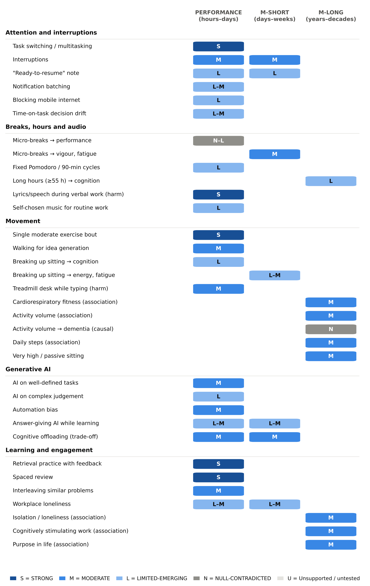
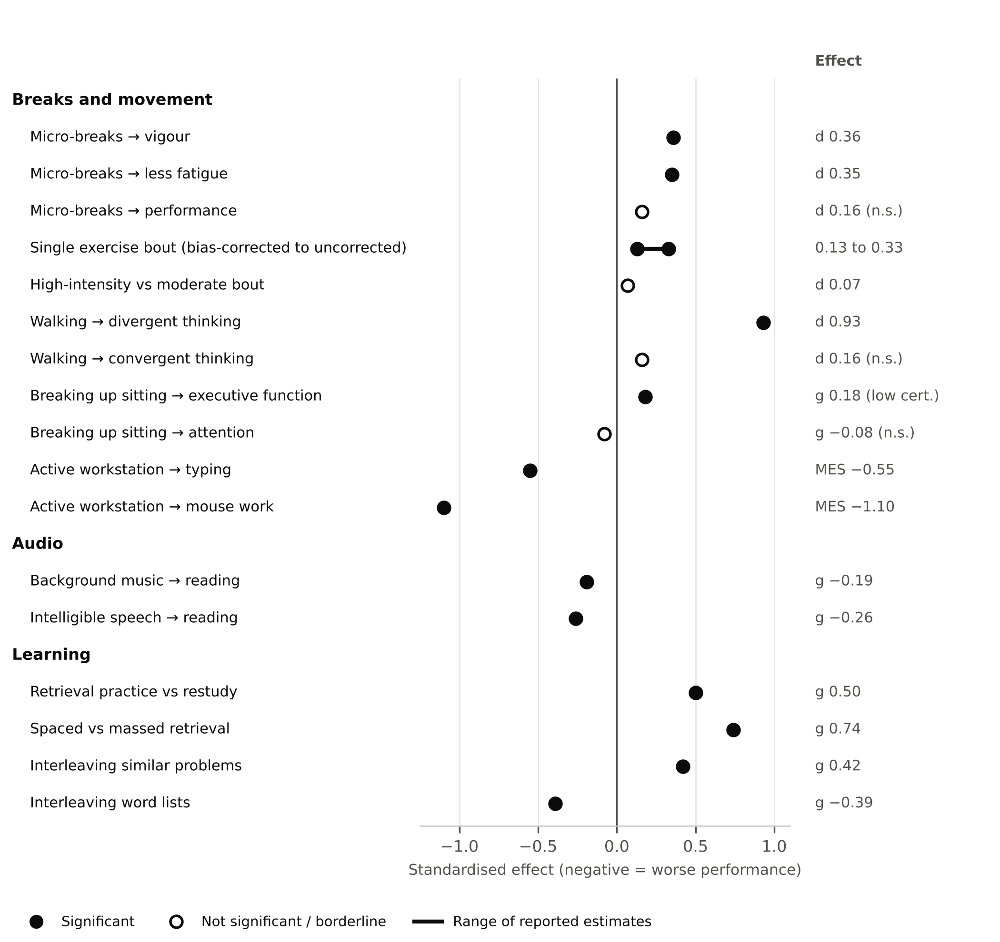

Abstract
Background: How professionals organise their working day — how often they are interrupted, when they take breaks, whether they move, how they learn and how they use generative AI — may affect cognitive performance as much as sleep or stress. The evidence for these working practices is scattered across laboratory, field and cohort research.
Methods: This evidence-graded narrative review drew on meta-analyses, randomised and field experiments, large cohorts and Mendelian randomisation studies. Each component was graded on four levels (STRONG, MODERATE, LIMITED-EMERGING, NULL-CONTRADICTED) across three horizons: performance (hours to days), short-term maintenance (days to weeks) and long-term maintenance (years to decades).
Results: Task switching carried a robust cost (STRONG, laboratory), and interruptions lasting only seconds multiplied errors (MODERATE). Micro-breaks raised vigour (d 0.36) and reduced fatigue (d 0.35) but did not reliably improve performance. A single moderate bout of exercise produced a small, short-lived cognitive lift (SMD 0.33 uncorrected; g 0.13 after bias correction), and walking raised divergent thinking (d 0.93) but not analytical problem-solving; exercising while typing impaired fine-motor work. Generative AI made professionals 40% faster with 18% higher quality on well-defined writing tasks, but reduced accuracy on tasks outside its capability, and answer-giving AI impaired learning unless designed to give hints. Retrieval practice (g 0.50) and spacing were the strongest learning habits (STRONG). Cardiorespiratory fitness, daily steps, cognitively stimulating work and social connection were associated with better long-term brain health (MODERATE association), but long-lag and Mendelian randomisation analyses did not support a causal effect of activity volume on dementia.
Conclusions: The best-supported practices protect attention from fragmentation, use breaks and movement for energy rather than as performance boosters, pair AI use with verification, and build learning on retrieval and spacing. Long-term associations are real but modest and mostly observational. Trials in working-age professionals and founders are needed.
- interruptions
- task switching
- work breaks
- physical activity
- sedentary behaviour
- generative AI
- retrieval practice
- spacing effect
- loneliness
- knowledge workers
1. Introduction
Most discussions of cognitive performance at work focus on sleep, stress and diet. Yet the way a working day is organised — how often attention is fragmented, how breaks are used, whether people move, how they learn new material, and how they use generative AI — is more directly under a professional's control and is the main target of productivity tools and workplace programmes.
Advice in this area is often confident and specific: work in 25-minute or 90-minute blocks, take a walk to think better, never multitask, or let AI handle routine work. Some of this advice is well supported; some rests on single studies, student samples or figures that cannot be traced to a primary source.
This review grades the peer-reviewed evidence for working practices, physical activity during and around work, learning strategies, social and cognitive engagement, and generative AI as determinants of cognitive performance and its maintenance in working adults. It is one of three companion reviews; the others cover sleep, stress and recovery, and popular cognitive-enhancement claims (companion reviews, in preparation).
2. Methods
2.1 Design
This is an evidence-graded narrative review. It was not conducted as a systematic review, and no protocol was registered.
2.2 Scope
The review covered behavioural components of work and learning: task switching, interruptions and digital distraction; breaks and work rhythms; working hours; the audio environment; physical activity, fitness and sitting; generative AI and cognitive offloading; learning strategies; and social connection, purpose and cognitively stimulating work. Environmental exposures, substances, supplements and medical risk factors were out of scope.
2.3 Search and selection
Sources were identified through searches of PubMed/MEDLINE and of publisher and citation databases accessed through Digital Object Identifiers (DOIs), which also captured management, economics and human–computer interaction journals and refereed conference proceedings that are not indexed in PubMed. Searches combined terms for each component listed in Section 2.2 with terms for cognitive outcomes (for example cognition, attention, working memory, memory, creativity, cognitive decline and dementia) and for study design (meta-analysis, systematic review, randomised controlled trial, cohort and Mendelian randomisation). Only English-language publications were included. The author selected and graded the evidence, with assistance from AI tools (Section 2.7). The final reference list comprises 226 sources published between 1982 and 2026, of which at least 184 are indexed in PubMed.
Priority was given to meta-analyses and umbrella reviews, randomised controlled trials (RCTs), field experiments, large prospective cohorts and Mendelian randomisation (MR) studies, with working-age samples preferred where they existed. This review is part of a programme of three companion reviews that drew on 17 topic-specific evidence summaries covering several hundred peer-reviewed sources, including a small number of refereed conference papers.
2.4 Verification of figures
Every quantitative figure was checked against the abstract or full text of its primary source. Figures that could not be verified against a primary source — for example, numbers reported only in press releases or effect sizes seen only in secondary summaries — were excluded.
2.5 Evidence grading
Each component was graded on a four-level scale:
- STRONG: several consistent meta-analyses or RCTs.
- MODERATE: one good meta-analysis, or consistent large cohorts or trials.
- LIMITED-EMERGING: single or small studies, or indirect or conflicting evidence.
- NULL-CONTRADICTED: well-powered tests or replications failed.
Where the evidence fitted none of these levels, a plain descriptor is used (“unsupported”, “untested”, “conflicting” or “no direct evidence”). Where association and causation diverge, both grades are given.
2.6 Time horizons and effect sizes
Horizons are PERFORMANCE (hours to days, including learning), M-SHORT (days to weeks) and M-LONG (years to decades). Effect sizes are standardised differences (SMD, d or g; about 0.2 is small and 0.5 medium) or hazard, risk and odds ratios as reported by the source studies.
2.7 Use of AI tools
Generative AI tools, including Claude (Anthropic), were used in part to assist with identifying and summarising literature, structuring the manuscript, preparing figures and editing language. The author reviewed all AI-assisted content, checked every claim, figure and reference against the primary sources, and takes full responsibility for the content of this article. AI tools are not listed as authors.
3. Results
3.1 The evidence base
Working-age evidence in this area is more plentiful than for long-term brain health, but uneven. Laboratory studies of task switching and learning mostly involve students; field evidence comes from clinicians, nurses, office workers, consultants, customer-support agents and software developers; and long-term findings on activity, fitness and social connection come mostly from cohorts recruited in midlife or later, such as Whitehall II [1], CARDIA [2] and UK Biobank {del Pozo Cruz 2022}. Founder-specific evidence is limited to a study of 203 entrepreneurs [3], a study of 377 small-business owner-managers [4] and a field experiment in Kenyan entrepreneurs [5]. Reverse causation is a recurring problem for long-horizon claims: across 19 cohorts, physical inactivity predicted dementia only when measured less than 10 years before diagnosis [6]. Long-horizon findings are therefore described as associations unless trials or MR studies say more.
3.2 Task switching and interruptions carry reliable costs
Switching between tasks has a robust time and error cost that grows with task complexity and is only partly removed by preparation [7,8] — STRONG (laboratory, PERFORMANCE) — and only 2.5% of 200 people multitasked in a driving simulator without decrement [9]. The popular “multitasking costs 40% of productivity” and “23 minutes to refocus” figures were not found in the abstracts or summaries of the peer-reviewed sources they are attributed to and should be treated as unverified [8,10,11]. Interruptions averaging only 2.8 seconds doubled, and 4.4 seconds tripled, sequence errors in a place-keeping task [12]; in 98 hospital nurses each interruption was associated with a 12.7% increase in clinical errors [13]; and interrupted participants finished tasks faster, with no difference in quality, but reported more stress, frustration, time pressure and effort [11] — MODERATE (PERFORMANCE). Attention left on an unfinished task impairs the next one, and a brief written “ready-to-resume” plan reduced that residue in experiments [14] and in a four-day field study of 50 employees, where it also weakened the link from residue to exhaustion [15] — LIMITED-EMERGING.
3.3 Phones, notifications, email and mind-wandering
Phones matter through what they do, not their mere presence. A notification disrupted an attention task even when ignored [16]; a week with alerts off reduced self-reported inattention in 221 adults [17]; and batching notifications three times a day improved attentiveness, mood and stress in a randomised field experiment of 237 people, while turning them off entirely raised anxiety and fear of missing out [18] — LIMITED-EMERGING to MODERATE. A preregistered randomised trial in 467 adults (mean age 32) found that blocking mobile internet for two weeks improved objectively measured sustained attention, although only a quarter fully complied [19] (LIMITED-EMERGING). The “brain drain” from a phone merely sitting on the desk failed direct and conceptual replications [20] and survives in meta-analysis only as a small working-memory effect (memory g −0.23 [21,22]). Trait media multitasking has a weak link to distractibility that shrinks after small-study correction [23] (LIMITED, contested). Among 40 information workers, more daily email time went with lower rated productivity and higher measured stress, and batching email showed no stress benefit [24]; cutting email entirely for five days lowered heart-rate-measured stress in 13 workers [25] — LIMITED-EMERGING. Minds wander about 34.5% of waking time [26], more so as time on task grows (individual-participant meta-analysis of more than 10,000 people [27]), with worse performance on complex tasks [28] — MODERATE association; in employees, moving from a boring to a meaningful task interrupted the boredom → mind-wandering → lost-productivity spillover [29].
3.4 Time on task and decision fatigue
Performance declines over a sustained session in the laboratory (the vigilance decrement [30]) — MODERATE. In the field, decision quality in professionals sometimes drifts as sessions wear on: clinicians' odds of prescribing antibiotics rose to 1.26 by the fourth hour of a session across 21,867 visits [31]; orthopaedic surgeons' odds of scheduling an operation fell 10.5% with each additional appointment [32]; sell-side analysts' accuracy fell and their use of heuristics rose with the number of forecasts already issued that day [33]; executives' earnings-call tone grew more negative through the day [34]; and hand-hygiene compliance in 4,157 caregivers fell 8.7 percentage points across 12-hour shifts and recovered after longer breaks, though the outcome is rule compliance rather than cognition and evidence that longer breaks restore working adults' cognitive performance remains LIMITED [35]. But a preregistered review of 82 healthcare studies found significant decision-fatigue effects in only 45% of quantitative tests [36], large 2026 datasets were null for test ordering and antibiotics [37], and the famous “hungry judges” parole study is partly a scheduling artefact [38]. Grade: LIMITED-EMERGING to MODERATE association (PERFORMANCE) — schedule high-stakes decisions early in a session or after a break, without promising a measured gain. The ego-depletion mechanism behind “you have a daily decision budget” is NULL-CONTRADICTED (three preregistered multi-lab replications, d 0.04, 0.06 and 0.10 [39–41]).
3.5 Breaks restore vigour more than output
Micro-breaks of 10 minutes or less raised vigour (d 0.36) and reduced fatigue (d 0.35), but did not significantly improve overall performance (d 0.16, p = 0.116) except on less demanding tasks, and longer breaks gave larger performance boosts in meta-regression [42] — MODERATE for vigour and fatigue (M-SHORT), NULL-to-LIMITED for performance. Break content matters: relaxation and social micro-breaks buffered work demands in 86 office workers, while “cognitive” breaks such as browsing aggravated them [43]; 15-minute lunchtime park walks and relaxation exercises improved self-rated afternoon concentration and fatigue in employees [44]; and relaxing, autonomously chosen lunch breaks reduced end-of-day fatigue [45] — LIMITED-EMERGING. Fixed formulas are not supported: three small student experiments of Pomodoro-style breaks (24/6 or 25/5) found no performance differences and mixed mood effects [46–48] — LIMITED/mixed — and no peer-reviewed study shows that working in 90-minute “ultradian” blocks improves performance (the idea traces to a hypothesis paper [49]). If-then implementation intentions are among the best-replicated self-regulation tools (d .27–.66 for goal attainment across 642 tests [50]) — STRONG, but as a behaviour-change enabler rather than a determinant of cognitive capacity; making a specific plan for unfinished goals eliminated their intrusive interference in student experiments [51] (LIMITED-EMERGING), and in employees unfinished tasks were associated with more work-related thoughts during off-job time (ρ .38 [52]).
3.6 Long working hours
Working 55 or more hours a week (versus 35–40) is associated with higher stroke incidence (RR 1.35; rated “sufficient evidence of harmfulness” by the WHO/ILO [53]) with a dose-response from 49 hours [54] — a medical outcome, so its brain relevance is an inference. The cognitive evidence is weaker and mixed: in 2,214 Whitehall II civil servants, more than 55 hours a week predicted decline in reasoning over five years [55]; a Danish cohort found no higher dementia risk at 45 or more hours [56]; and a Korean cohort was null overall but showed HR 1.50 in women [57] — LIMITED-EMERGING (mixed) (M-LONG). Long hours were associated with new depressive symptoms (OR 1.14 overall; 1.50 in Asia, 1.11 in Europe, null in North America and Australia [58]), call-centre agents became less productive as their hours rose [59], and in a non-randomised study of 2,896 employees in 141 organisations a four-day week without pay cuts reduced burnout, fatigue and sleep problems [60] (LIMITED-EMERGING, M-SHORT). A widely cited 2025 pilot found larger, not smaller, regional brain volumes in overworked healthcare workers and cannot be read as harm [61]. A weekly-hours flag around 55 hours is defensible as a recovery and burnout signal, not as proven cognitive damage.
3.7 The audio environment
Background speech and lyrics reliably impair reading and verbal memory: across 65 studies, music lowered reading comprehension by g −0.19 and intelligible speech by −0.26, with lyrical music about as disruptive as speech and more disruptive than instrumental music [62]; lyrics hindered verbal memory and reading comprehension by about d −0.3 while instrumental lo-fi music had no credible effect [63]; and liking the music did not protect serial recall [64] — STRONG for reading and verbal memory (PERFORMANCE). Music generally impaired difficult tasks and introverts, with null effects in most cases [65] (MODERATE), whereas self-selected music reduced mind-wandering and increased task focus in low-demand vigilance tasks, mediated by arousal and mood [66,67] — LIMITED-EMERGING. In employees, an inverted U between music hours and self-rated performance suggests diminishing returns [68], and imposed workplace music that did not fit employees' needs increased cognitive depletion [69] — LIMITED-EMERGING; user control matters. For recovery after acute stress, music had no significant effect in healthy adults (g 0.15, 14 RCTs [70]), even though music interventions reduce stress in mostly clinical settings (d 0.38–0.55 [71]); two systematic reviews support music as a countermeasure to mental fatigue in small laboratory samples [72,73] — LIMITED-EMERGING to MODERATE. The Mozart-specific effect does not survive: spatial gains after music vanished once arousal and mood were controlled [74] and a 2023 multiverse meta-analysis attributes it to low power and bias [75] — NULL-CONTRADICTED (provisional). Binaural “focus beats” show pooled effects of g 0.40–0.45 in small heterogeneous studies [76,77], but a careful multi-experiment study found “rather strong evidence against” an effect on sustained attention [78] and EEG entrainment is inconsistent [79] — LIMITED/contested, trending NULL for vigilance.
Music with added amplitude modulation, marketed as “focus music”, has early evidence from a single research programme in which the behavioural benefit appeared only early in the testing session; it is graded LIMITED-EMERGING in the companion review on cognitive-enhancement claims [80].
3.8 A single bout of exercise gives a short-lived lift, not an all-day boost
A single bout of exercise reliably improves cognition afterwards, but the effect is small. A meta-review of 30 meta-analyses (383 studies, 18,347 participants) puts it at SMD 0.33, with point estimates for attention (0.37) and executive function (0.36) above memory (0.23) and information processing (0.20), although the authors describe the benefit as general across domains [81]. That figure pools estimates not corrected for publication bias; a bias-corrected Bayesian meta-analysis of 113 studies in young adults gives g 0.13 [82], so the realistic range is about 0.1–0.35. The US Physical Activity Guidelines committee rated the evidence for transient post-exercise benefits as strong [83] — STRONG for existence, small magnitude (PERFORMANCE). The dose is unsettled. High-intensity exercise adds nothing over moderate (d 0.07) [84]. The foundational 79-study meta-analysis (overall g 0.097) found that bouts of 10 minutes or less gave no benefit, that 11–20 minutes of exercise impaired cognition tested during the session, and concluded that “at least 20 min of exercise is necessary to see effects”; its timing results are internally inconsistent (one analysis found benefit only within about 15 minutes of finishing, another a dip in the first 10 minutes and a peak 11–20 minutes after), so it supports a short-lived benefit rather than a precise window [85]. The 2025 meta-review found that duration and intensity did not moderate the effect and that benefits were largest when cognition was tested after rather than during exercise [81], and single trials show benefits up to about 50 minutes [86]. The defensible prescription is a moderate bout of roughly 20 minutes or more, finished shortly before demanding work, with no proven minimum. Gains were larger in people who started out performing worse [87], and a single resistance-training session improved global cognition (SMD 0.56) and inhibition (0.73) across 12 trials [88] (MODERATE). Three cautions keep claims modest: working-memory accuracy dropped right after intermediate-intensity exercise even as speed rose [89]; prefrontal tasks fared worse than other tasks during hard exercise [90] (LIMITED-EMERGING to MODERATE), so taking demanding calls mid-run is counterproductive; and set-shifting gains shrank to g −0.13 against active controls, raising placebo concerns [91]. The most dependable acute effect is on energetic mood: positive activated affect rose by d 0.47 for at least 30 minutes across 158 studies, most consistently after low-intensity sessions of up to about 35 minutes [92] (MODERATE).
Timing relative to learning matters: move before or after, not during. Acute exercise helped long-term memory (SMD 0.52) more than short-term memory (0.26) [93]; exercise during encoding was neutral to harmful (d −0.04 to −0.12), after encoding helped consolidation (d 0.33–0.47), and before encoding gave a smaller effect — d 0.23 overall (free recall 0.40, cued recall 0.08, recognition −0.06) in one meta-analysis and a non-significant d 0.11 (p = 0.08) in the other [94,95], although one 88-person RCT found only the before-learning bout helped [96] — MODERATE; the often-quoted “exercise 4 hours after learning” result is a single study [97] (LIMITED-EMERGING). For idea generation, walking is the best-evidenced movement tactic: a 2026 meta-analysis of 23 studies (1,036 participants, mostly students) found divergent thinking up by d 0.93 (moderate GRADE certainty; 0.82 in randomised trials) but no effect on convergent problem-solving (d 0.16, n.s.) [98], building on the original finding that 81% of walkers produced more alternative uses [99]; four flights of stairs raised originality (d 0.49) in 22 students [100] — MODERATE for walking meetings and brainstorming walks, not for analytical problem-solving. After a short night, 30 minutes of moderate evening cycling before learning offset the memory deficit of 4.5 hours' sleep in 88 young adults, mediated by slow-wave sleep [101] (LIMITED-EMERGING) — a partial countermeasure, not a substitute for sleep. But exercise did not undo mental fatigue built up during a sustained vigilance task [102] (LIMITED-EMERGING/CONTRADICTED), and morning-versus-afternoon effects are inconsistent [103] (LIMITED-EMERGING).
3.9 Breaking up sitting restores energy more reliably than cognition
The newest meta-analysis of 21 randomised crossover trials found that interrupting prolonged sitting produced small gains in executive function (g 0.18) and memory (g 0.37), both at low certainty, and no change in attention (g −0.08) [104]; an earlier meta-analysis found no effect on overall cognition [105] and a systematic review found only 3 of 7 studies positive [106] — LIMITED-EMERGING (mixed) for cognition. The more consistent benefit is felt energy: three minutes of light walking every 30 minutes lowered fatigue at 4 and 7 hours in adults aged 45–75 without changing executive function or memory [107], and six hourly five-minute walking “microbouts” improved end-of-day mood, energy and fatigue in 30 sedentary adults without affecting flanker or Trail-Making scores [108] — LIMITED-EMERGING to MODERATE (PERFORMANCE, M-SHORT). “Exercise snacks” follow the same pattern: 10 minutes of stair walking energised sleep-deprived young women more than 50 mg of caffeine without improving working memory or attention [109], and the only office-worker trial (25 workers aged about 51; three 1-minute vigorous bouts a day) is a pilot whose acute test was uncontrolled [110] (LIMITED-EMERGING).
Exercising while doing focused computer work is counterproductive: active workstations slowed typing (MES −0.55) and mouse work (−1.10) [111], with treadmill desks worst for typing (SMD −0.8) [112,113] — MODERATE evidence of fine-motor harm — while sit-stand desks showed neither cognitive benefit nor harm in small trials (LIMITED-EMERGING). Workplace programmes reduce sitting but move self-rated rather than measured cognition: a sit-stand desk programme cut occupational sitting by 83 minutes a day in 146 NHS desk workers and improved self-rated job performance, engagement and fatigue, but cognitive tests showed “no notable changes” [114]; the larger SWAL trial (756 office workers, mean age 45) found small improvements in stress and vigour but no difference in job performance, presenteeism or fatigue [115]; and a meta-analysis of 80 RCTs found small organisational benefits (g 0.30) and fewer mental-health complaints (g −0.56), larger with mind-body components and heavier use, but with baseline-bias caveats [116]. Grade: LIMITED-EMERGING to MODERATE, mixed (M-SHORT).
3.10 Fitness, steps and passive sitting track brain health over decades — causation is unproven
Months of regular training produce small, general gains in cognitive capacity in older adults and uncertain ones in younger adults. Pooled RCTs give g 0.12–0.16 for attention, executive function and memory in adults [117] and ES 0.29 in adults over 50 [118]; an umbrella review of 2,724 RCTs found SMD 0.42 for general cognition, but only 0.23 when restricted to high-confidence reviews (94 of 133 reviews were critically low quality) [119]. A bias-sensitive umbrella review of healthy people found the effect shrinking from d 0.22 to 0.13 with active controls and to d 0.05 (non-significant) after publication-bias correction [120], a conclusion exercise scientists have formally disputed [121]. The largest long trials in older adults were null — 24 months in 1,635 adults aged 70–89 [122], five years in 945 Norwegians [123] — as was the Cochrane review of aerobic training [124]. The US guideline committee graded the evidence MODERATE for adults over 50 and “Not Assignable” (insufficient) for ages 18–50 [83]. The working-age trials are few but encouraging: six months of aerobic training four times a week in 132 below-median-fitness adults aged 20–67 improved executive function by 0.23 SD at age 40 and 0.60 SD at age 60, with no effect on memory or speed [125]; 12 months of 150 minutes a week in 130 adults aged 26–58 reduced MRI-predicted brain age by 0.95 years versus usual care [126]; and 12 weeks of aerobic exercise in inactive 50–70-year-olds improved working memory (SMD 0.29) and attention (0.33) against a wait-list [127]. Dose signals from older-adult trials converge on accumulated volume — at least 52 total hours of training [128], at least 724 MET-minutes a week (roughly 180 minutes of brisk walking) with diminishing returns above 1,200, and resistance training ranked highest [129], in 45–60-minute sessions of at least moderate intensity [118]. Resistance training once or twice a week improved Stroop performance by 10.9–12.6% over 12 months in women aged 65–75 [130]. Grades: chronic training → cognitive capacity MODERATE (>50, small), NULL-CONTRADICTED after bias correction in healthy samples, LIMITED-EMERGING at 18–50 (M-LONG); resistance training MODERATE in older adults; tai chi, yoga, HIIT, dance and exergames LIMITED-EMERGING.
Long-horizon associations are consistent but lag-sensitive. Physical activity was associated with 20% lower dementia risk across 58 studies, persisting at 20-year follow-up [131], but the same group's 104-study analysis of cognitive decline found the association weak (RR 0.97 after funnel correction) and absent beyond 10 years [132]; recommended activity in midlife Whitehall II civil servants was unrelated to dementia over 27 years (HR 1.00), with activity declining from up to 9 years before diagnosis [1]; and genetically predicted activity was unrelated to Alzheimer's disease [133]. Guidelines nonetheless back activity: WHO recommends 150–300 minutes a week of moderate or 75–150 of vigorous activity plus muscle strengthening on two or more days [134], and its 2026 dementia-risk guideline keeps physical activity for adults with normal cognition as a strong recommendation at moderate certainty [135]; the Lancet Commission weights physical inactivity at about 2% of dementia [136]. Grade: MODERATE association, weak and lag-sensitive; causal interpretation NULL-CONTRADICTED by the long-lag analyses (HR 1.01 at a ≥10-year lag; Whitehall II HR 1.00) and Mendelian randomisation.
Cardiorespiratory fitness is the most consistent physical marker. In 19,458 midlife preventive-clinic patients followed for 25 years, the fittest fifth had 36% lower later dementia risk than the least fit (HR 0.64) [137]; in HUNT, each 1-MET higher estimated fitness went with 16% lower incident dementia (HR 0.84 — a single-cohort estimate from non-exercise fitness estimates and a median 7.6-year follow-up, not a promised effect), and moving from unfit to fit with HR 0.52 and 2.2 extra dementia-free years [138], although within the five-year Generation 100 trial increasing VO2peak was not associated with better cognition (fitness level and declining fitness were) and a substudy found mixed directions [123,139]; high versus low fitness gave IRR 0.60 in 61,214 UK Biobank adults aged 39–70, including those at high genetic risk [140]; young-adult fitness predicted better memory and processing speed 25 years later in CARDIA [141]; and 1 SD lower fitness at age 40 was associated with about one extra year of brain ageing two decades later [142] — MODERATE association (M-LONG). Low grip strength was associated with higher dementia risk (lowest vs highest quintile HR 1.72 in 466,788 adults [143]), but likely as a marker of ageing (MODERATE association, causation unproven).
For daily steps, UK Biobank accelerometry in 78,430 adults aged 40–79 found the dementia association non-linear: about 3,800 steps a day captured half the maximal risk reduction (HR 0.75), the optimum was about 9,800 (HR 0.49), and purposeful steps and a faster peak 30-minute cadence (~112 steps/minute; HR 0.38) carried stronger associations [144]; a dose-response meta-analysis put the inflection at 5,000–7,000 steps (7,000 vs 2,000: HR 0.62, from only two dementia studies) [145] — MODERATE association, short follow-up. Meeting 150 minutes a week concentrated in one or two days (“weekend warrior”) was associated with similar dementia risk to a spread-out pattern [146] (LIMITED-EMERGING), potentially useful for people with irregular working weeks.
Sitting is a long-horizon risk mainly at very high volumes and in passive forms. Versus a median of 9.3 hours a day, accelerometer-measured sedentary time of 12 hours was associated with HR 1.63 and 15 hours with HR 3.21 for dementia in 49,841 adults over 60, regardless of how sitting was broken up [147]; TV time was associated with higher risk (HR 1.24) and computer time with lower risk (HR 0.85) at every physical-activity level in 146,651 adults [148]; and 25 years of high TV plus low activity from ages 18–30 roughly doubled the odds of poor midlife processing speed (OR 1.95) and executive function (OR 2.20) in CARDIA [2]. Grades: total sedentary time MODERATE association; the >10-hour threshold and the TV-versus-computer distinction LIMITED-EMERGING. Desk time spent on cognitively engaged work should not be coded as harmful. Exercise therapy did not relieve burnout in a meta-analysis of RCTs [149] (null pooled result), and the only founder-specific study — 203 entrepreneurs with four years of firm financials — linked moderate-to-vigorous exercise to well-being through grit, with diminishing returns at very high volumes, and well-being to later firm performance [3] (LIMITED-EMERGING).
3.11 Generative AI raises output on routine work but can erode skills still being built
On well-defined tasks within AI's capability, randomised and field experiments in professionals show large gains: 453 college-educated professionals finished writing tasks 40% faster with 18% higher quality [150]; 758 BCG consultants completed 12.2% more tasks 25.1% faster [151]; 5,172 support agents resolved 15% more issues per hour, with the biggest gains for novices [152]; and 4,867 developers completed 26% more tasks [153] — MODERATE (PERFORMANCE, assisted output). On complex judgement the picture is mixed: consultants were 19% less likely to reach correct solutions on a task outside AI's capability (Dell'Acqua 2026); GPT-4 improved physicians' management reasoning by 6.5% [154] but not diagnostic reasoning [155]; and an AI business assistant had no average effect on Kenyan entrepreneurs' revenue or profit, with low performers doing nearly 10% worse because of which advice they chose to implement [5] — LIMITED-EMERGING. Uncritical acceptance is a demonstrated error source: radiologists' accuracy fell from about 80% to 20–46% when a purported AI suggestion was wrong [156], and workload, complexity and time pressure worsen automation bias [157] — MODERATE for automation bias with decision-support systems generally (mostly pre-generative-AI clinical tools), LIMITED for AI-labelled advice specifically (one experiment in 27 radiologists). The skill cost depends on how AI is used during learning: high-school students using an answer-giving chatbot scored 17% worse on a closed-book exam minutes later, while a hint-only tutor removed the harm [158]; undergraduates who studied with ChatGPT retained 11 points less on a surprise test 45 days later (d 0.68 [159]); a pedagogically designed AI tutor outperformed in-class active learning [160]; and experienced endoscopists' unassisted adenoma detection fell from 28.4% to 22.4% after three months of routine AI use (observational [161]) — LIMITED-EMERGING to MODERATE, design-dependent. In 319 knowledge workers, greater trust in AI went with less self-reported critical thinking [162] (LIMITED). Offloading to notes and reminders is a trade-off — better immediate performance and freed capacity, worse memory for the offloaded item [163,164] (MODERATE) — and internet search inflates people's estimates of their own knowledge [165] (MODERATE). Habitual GPS use is modestly associated with poorer mental maps (r −0.18) but not with worse wayfinding [166] (LIMITED). Over decades, everyday digital-technology use is associated with lower risk: cognitive decline HR 0.74 in adults over 50 [167] and regular internet use HR 0.57 for dementia in adults aged 50–65 [168] — MODERATE association that rules out a blanket “digital dementia” message; no longitudinal data exist on generative-AI reliance.
3.12 Learning strategies: retrieval practice and spacing are the strongest, cheapest levers
How professionals learn new domains has better evidence than almost any other performance habit, though nearly all of it comes from students. Testing oneself with feedback beats restudying (g 0.50 across 159 laboratory effects, rising to 0.69 when the final test is a day or more later; with feedback g 0.73, without feedback and with low initial success g 0.03) [169], and quizzing raised classroom achievement by g 0.50 across 222 studies and 48,478 students [170]; all age groups — including community adults aged 55–65 — benefited equally [171]; transfer to new questions is smaller (d 0.40) and conditional [172] — STRONG (PERFORMANCE). Spacing review sessions beats massing them: in an internet sample of 1,354 adults (mean age 34), the optimal gap improved final recall by up to 64% (d 1.1) and declined from about 20–40% of the retention interval for a one-week horizon to about 5–10% for a one-year horizon, with gaps that are too long costing far less than gaps that are too short [173]; spaced versus massed retrieval gave g 0.74, while expanding versus uniform schedules made no difference (g 0.03) [174] — STRONG. Self-explanation prompts help (g 0.55 and 0.46 in two meta-analyses, smaller for delayed tests [175,176]) — STRONG in students; interleaving similar problem types helps (g 0.42) but backfires for word lists (g −0.39) [177] — MODERATE; highlighting, rereading and summarising rank lowest [178]; and the “laptops harm learning” claim did not survive direct replication, leaving at most a small longhand advantage (g 0.25 [179,180]) — LIMITED/mixed. Learners consistently misjudge spacing and interleaving as worse [181], so learning tools should schedule them by default. Professionals provide the only non-student field evidence: urology residents given spaced rather than massed online education scored higher two years later (ES 0.35 [182]), and a spaced-education game (one question every three days, re-asked after 12 days if wrong and 24 days if right) modestly sped clinicians' patients to blood-pressure control (HR 1.04) against an active control [183] — MODERATE in health professionals; no corporate, manager or founder trials exist. Retrieval practice also protected memory under post-learning stress (g 0.45 [184]; LIMITED-EMERGING). None of these study strategies has been shown to protect the ageing brain; they are learning-efficiency (PERFORMANCE) habits, not M-LONG components.
3.13 Social connection at work and over the long term
The 2024 Lancet Commission counts later-life social isolation among its 14 modifiable dementia risk factors (RR 1.6, weighted share about 5%), while noting that the source review relied mostly on studies with under four years of follow-up, “making reverse causation likely”, and that a second review gave a smaller RR of 1.18 [136]. In UK Biobank (mean age 57), objective isolation was associated with dementia independent of loneliness and depression (HR 1.26), and isolated people had lower grey-matter volume in temporal, frontal and hippocampal regions [185]. Loneliness was associated with dementia across 21 samples and 608,561 people (HR 1.31), persisting after adjustment for depression and isolation [186], although in some UK Biobank analyses most of the loneliness association ran through depressive symptoms [185]. The midlife evidence is closest to the target users: in Framingham's third generation (mean age 46), persistent but not transient loneliness was associated with cognitive decline and smaller temporal-lobe volume [187], and in Whitehall II civil servants, more frequent contact — driven by contact with friends — at age 60 was associated with lower dementia risk (HR 0.88 per SD) and slightly better cognition (+0.07 SD), though contact at age 50 was not significant [188]. Reverse causation is real and large: non-participation in group activities predicted dementia only in the first decade of follow-up among 851,307 women (second-decade RR 0.99) [189], leisure participation at mean age 56 was unrelated to dementia over 18 years [190], and Mendelian randomisation supports no causal effect of isolation or loneliness on dementia [191] or cognition [192]. Grades: MODERATE association, LIMITED-EMERGING causal (M-LONG). Interventions reduce loneliness itself only modestly (SMD about 0.2–0.4, with group-based and social-cognition-focused approaches best [193,194]; MODERATE), and social-engagement trials in adults over 60–75 show small, inconsistent cognitive effects (e.g., +1.75 MoCA points with webcam conversations [195]) — LIMITED-EMERGING.
At work, loneliness tracks performance and burnout. A meta-analysis of mostly cross-sectional studies found workplace loneliness correlated with lower job performance (r −0.35, 9 studies) and higher burnout (r 0.39) [196]; in a time-lagged field study of 672 employees, loneliness predicted lower supervisor-rated performance six weeks later [197]; professional isolation in 261 teleworkers was associated with lower manager-rated performance, more so with more telework and less so with face-to-face contact [198]; week-to-week increases in isolation tracked more cyberloafing via impaired self-control in 343 employees [199]; and in 377 French small-business owner-managers, job stressors predicted burnout through occupational loneliness [4]. A cross-sectional survey of 522 remote workers found no link between loneliness and self-rated performance, though loneliness predicted emotional exhaustion [200]. Grade: LIMITED-EMERGING to MODERATE association (PERFORMANCE, M-SHORT). In the short term, a 10-minute get-to-know or cooperative-goal conversation improved executive function in students relative to no activity (d 0.85 and 0.73, about 16 per group), whereas a plain competitive interaction did not; in two smaller follow-up studies, competitive interactions that required mind-reading or perspective-taking also helped (d 0.91 and 0.65) [201]; feeling socially excluded impaired complex reasoning but not simple processing [202]; and in adults aged 70–90, days with more pleasant social interaction were followed by better cognitive scores that day and the next two [203] — LIMITED-EMERGING (PERFORMANCE).
3.14 Purpose, cognitively stimulating work and learning complex skills
A greater sense of purpose in life is associated with lower dementia risk (HR 0.76 across eight samples and 214,270 people [204]) and buffered the effect of Alzheimer pathology on cognition at autopsy [205]. But purpose declines before cognitive impairment appears [206], purpose at age 52 was unrelated to dementia at 80 in a 28-year study [207], and in adults under 50 the link between purpose and everyday cognitive failures was fully explained by depressed affect [208] — MODERATE association, LIMITED-EMERGING causal (M-LONG), with no intervention trials. High neuroticism (HR 1.24) and low conscientiousness (HR for conscientiousness 0.77) are the most robust personality predictors of dementia [209], and optimism shows weaker, inconsistent associations — but these are traits, useful for risk stratification (for example, people high in neuroticism may benefit most from stress-management support) rather than modifiable components.
For working-age users, formal education is largely already “banked”: each extra year raises cognitive level by about 1–5 IQ points [210] (MODERATE) but has negligible effect on the rate of age-related decline [211], and its genetic link to Alzheimer's disease runs through intelligence [212]. The modifiable analogue is cognitively stimulating work. In an individual-participant meta-analysis of 107,896 workers followed 13.7–30.1 years, high versus low cognitive stimulation at work was associated with lower dementia risk (HR 0.77; fully adjusted 0.82), and the association persisted from year 10 onward (HR 0.79), which argues against pure reverse causation [213]; in Norway, the most routine occupational trajectory from ages 30 to 65 carried 74% higher risk of mild cognitive impairment [214]; and greater mental stimulation at work was associated with higher cognition and more favourable 10-year change in 3,237 French workers aged 32–62 [215]. The evidence is not uniform: a meta-analysis pooled work complexity at only RR 0.95 [216], and the one study that controlled for adolescent cognitive ability found no independent effect of occupational complexity [217]. Grade: MODERATE association, LIMITED-EMERGING for a modifiable causal effect (M-LONG). For founders, cognitive challenge is likely already high; the marginal risk lies in overwork and strain rather than under-stimulation, and loss of daily challenge (retirement, a routine role, a long post-exit break) is the scenario to watch — verbal memory declined 38% faster after retirement in Whitehall II [218], though a meta-analysis found no effect on global cognition [219] (LIMITED, mixed).
Sustained, effortful learning of genuinely new and complex skills is plausible but thinly evidenced. In the Synapse RCT (adults aged 60–90, about 16.5 hours a week for 14 weeks), learning digital photography improved episodic memory (net ES 0.54), but quilting did not and socialising did nothing [220]; foreign-language courses for older adults did not improve memory or intelligence [221]; and music-instrument training gave small gains in inhibition and processing speed in older adults [222] — LIMITED-EMERGING. Cognitively stimulating leisure is associated with about 23% lower dementia risk (RR 0.77 across 38 studies [223]), but in five Nordic cohorts the associations attenuated toward null beyond 10 years of follow-up [224]; adult education was associated with lower dementia risk (HR 0.82) in UK Biobank adults aged 40–69 [225]; and WHO rates cognitive stimulation a conditional recommendation on very-low-certainty evidence [135] — LIMITED-EMERGING (M-LONG).
3.15 Summary of graded components
Figure 1 maps the evidence grade of each component across the three time horizons, and Figure 2 compares reported effect sizes for selected tactics. Table 1 summarises the headline findings.


| Component | Horizon | Grade | Headline effect |
|---|---|---|---|
| Task switching / multitasking | PERF | STRONG (laboratory) | Switch cost grows with task complexity; only 2.5% of 200 people multitasked in a driving simulator without decrement |
| Interruptions | PERF, M-SHORT | MODERATE | 2.8–4.4-second interruptions double to triple sequence errors; +12.7% clinical errors per interruption |
| Notification batching (~3 times a day) | PERF | LIMITED to MODERATE | Less inattention; switching notifications off entirely raised anxiety |
| Time-on-task drift in professional decisions | PERF | LIMITED to MODERATE (association, mixed) | Antibiotic prescribing OR 1.26 by hour 4 |
| Micro-breaks (≤10 min) | M-SHORT; PERF | MODERATE (vigour, fatigue); NULL–LIMITED (performance) | Vigour d 0.36; fatigue d 0.35; performance d 0.16, n.s. |
| Implementation intentions (if-then plans) | Behaviour enabler | STRONG (goal attainment) | d 0.27–0.66 |
| Long hours (≥55 h a week) | M-SHORT, M-LONG | MODERATE (stroke); LIMITED (cognition) | Stroke RR 1.35 |
| Lyrics or speech during reading and verbal work | PERF | STRONG (harm) | Reading comprehension g −0.19 to −0.26 |
| Single moderate exercise bout before demanding work | PERF | STRONG (existence); small; dose unsettled | SMD 0.33 uncorrected; g 0.13 bias-corrected |
| Walking while generating ideas | PERF | MODERATE | Divergent thinking d 0.93; convergent n.s. |
| Breaking up sitting | PERF, M-SHORT | LIMITED (cognition); LIMITED to MODERATE (energy, fatigue) | Executive function g 0.18; less fatigue with 3 min of walking every 30 min |
| Treadmill or cycle desk during typing or mouse work | PERF | MODERATE (harm) | Typing MES −0.55; mouse work −1.10 |
| Cardiorespiratory fitness | M-LONG | MODERATE (association) | Fittest vs least fit fifth: dementia HR 0.64 |
| Weekly activity volume | M-LONG | MODERATE association; causal NULL-CONTRADICTED | Null at ≥10-year lag (HR 1.01) |
| Daily steps | M-LONG | MODERATE (association) | ~3,800 steps a day = half the maximal risk reduction |
| Very high and passive (TV) sitting | M-LONG | MODERATE (total); LIMITED (TV vs computer) | 12 h a day HR 1.63; TV HR 1.24 vs computer HR 0.85 |
| Generative AI on well-defined tasks | PERF | MODERATE | 40% faster, 18% higher quality |
| Generative AI outside its capability; automation bias | PERF | LIMITED-EMERGING to MODERATE | 19% less likely to reach correct solutions; radiologist accuracy ~80% → 20–46% with wrong AI advice |
| Answer-giving AI while learning | PERF, M-SHORT | LIMITED to MODERATE (design-dependent) | −17% on a same-day exam; hint-only tutor removed the harm |
| Retrieval practice with feedback; spacing | PERF | STRONG | Retrieval g 0.50; spaced vs massed retrieval g 0.74 |
| Workplace loneliness | PERF, M-SHORT | LIMITED to MODERATE (association) | Performance r −0.35; burnout r 0.39 |
| Social isolation and loneliness (long term) | M-LONG | MODERATE association; LIMITED causal | Loneliness and dementia HR 1.31; MR null |
| Cognitively stimulating work | M-LONG | MODERATE association; LIMITED causal | Dementia HR 0.77 |
4. Discussion
4.1 Principal findings
The working practices with the most reliable effects on day-to-day thinking are again largely protective: limiting task switching and interruptions, keeping speech and lyrics away from verbal work, and avoiding exercise while doing fine-motor or prefrontally demanding tasks. Several popular “additive” tactics have smaller effects than commonly claimed. Breaks and short bouts of movement reliably improve energy, mood and fatigue, but improve measured performance only slightly or inconsistently, so they are better framed as energy tools than as performance boosters. Walking is the clearest exception: it substantially increases idea generation, though not analytical problem-solving.
Generative AI shows some of the largest short-term effects in this review, in both directions. On well-defined tasks within its capability, it raises output and quality substantially; outside that frontier, and when advice is accepted without checking, it can reduce accuracy. While people are still learning a skill, answer-giving use can impair later performance unless the tool is designed to prompt rather than to answer. Learning research offers the most robust and cheapest habits — retrieval practice with feedback and spaced review — although almost all of it comes from students.
Over the long term, cardiorespiratory fitness, daily steps, cognitively stimulating work and social connection are consistently associated with better brain health. However, lagged analyses and MR studies show that part of these associations reflects early disease changing behaviour, and structured trials in older adults produce only small cognitive gains.
4.2 Felt and measured effects diverge
As with sleep and stress, people's perceptions often mislead them. Interrupted participants finished tasks faster but reported more stress, frustration and effort [11]; learners consistently judged spaced and interleaved practice as less effective than it was [181]; and greater trust in AI went with less self-reported critical thinking [162]. Tools that rely only on how work feels may therefore steer people away from the practices that work best.
4.3 Implications for digital tools and workplace programmes
These suggestions are inferences from the grades above rather than tested recommendations.
- Manage interruptions and notifications by batching them, protecting focus periods and encouraging a brief “ready-to-resume” note before switching tasks, while recognising that the evidence for these specific tools is still limited.
- Present micro-breaks and relaxing or nature breaks as tools for energy and fatigue, not guaranteed performance gains; avoid fixed formulas such as 25-minute or 90-minute cycles.
- Suggest a moderate bout of movement (around 20 minutes or more, with no proven minimum) before demanding work, and walking for idea generation, but not demanding thinking during hard exercise or typing at a treadmill desk.
- Track weekly moderate-to-vigorous activity, strength sessions, daily steps and fitness trends as long-term associations, without promising dementia prevention; distinguish passive TV sitting from cognitively engaged desk work.
- Flag weekly working hours around 55 as a recovery and burnout signal, not as proven cognitive damage.
- Recommend silence or instrumental audio for reading and verbal work, and leave music choice for routine work to the user.
- Encourage verification of AI outputs, and hint- or explanation-based AI use while a skill is still being learned.
- Build learning features on retrieval practice with feedback and scheduled spacing, scheduled by default because learners underrate them.
- Use repeated check-ins on loneliness and social contact, because persistent rather than transient loneliness carries the long-term signal.
4.4 Limitations
This review has several limitations. First, it is a narrative rather than a systematic review: the search was not exhaustive, and no formal risk-of-bias assessment was performed for individual studies. Second, the four-level grading scale is study-specific and not equivalent to formal GRADE certainty ratings. Third, much of the experimental evidence comes from students and much of the long-term evidence from cohorts aged 50 or over. Fourth, generative AI is changing quickly, so effect sizes from 2023–2026 tools may not apply to later systems, and no longitudinal data on reliance on generative AI yet exist. Fifth, publication bias affects the exercise and learning literatures, and estimates without bias correction may overstate effects. Only English-language publications were included. Finally, the author is a founder of a company that develops products for working professionals (see Competing interests).
4.5 Future research
Priorities include: randomised trials of interruption-management and notification tools with objective attention outcomes in working adults; workplace trials testing whether breaks of different length and content improve measured performance; trials of pre-task exercise in working-age professionals using bias-resistant designs and active controls; longitudinal studies of generative-AI reliance and skill retention; and evaluations of spaced-learning tools in corporate and founder settings, where no trials yet exist.
5. Conclusion
How knowledge workers organise their day matters, but the best-supported practices are less dramatic than popular productivity advice. Protecting attention from fragmentation, using breaks and short bouts of movement for energy, walking to generate ideas, verifying AI outputs and learning through retrieval and spacing all have reasonable support. Fitness, activity, stimulating work and social connection go with better brain health over decades, but those associations are modest, partly explained by reverse causation, and not proof that changing these habits prevents decline.
Declarations
CRediT authorship contribution statement
Vishwanath Kannan: conceptualisation, investigation, evidence grading, visualisation, writing – original draft, and writing – review and editing.
Declaration of competing interest
The author is a founder of Adarna Inc., which develops wearable and software products for working professionals, including focus and scheduling features and a focus feature based on amplitude-modulated music. No product of the company is evaluated in this review.
Funding
This research received no external funding.
Data availability
No new data were generated. All data discussed are available in the cited publications.
Declaration of generative AI and AI-assisted technologies in the writing process
Generative AI tools, including Claude (Anthropic), were used in part to assist with identifying and summarising literature, structuring the manuscript, preparing figures and editing language. The author reviewed all AI-assisted content, checked every claim, figure and reference against the primary sources, and takes full responsibility for the content of this article. AI tools are not listed as authors.
References
- [1] Sabia S, Dugravot A, Dartigues JF, Abell J, Elbaz A, Kivimäki M, Singh-Manoux A. Physical activity, cognitive decline, and risk of dementia: 28 year follow-up of Whitehall II cohort study. BMJ. 2017;357:j2709. doi:10.1136/bmj.j2709. PMID: 28642251.
- [2] Hoang TD, Reis J, Zhu N, et al. Effect of Early Adult Patterns of Physical Activity and Television Viewing on Midlife Cognitive Function. JAMA Psychiatry. 2016;73(1):73-79. doi:10.1001/jamapsychiatry.2015.2468. PMID: 26629780.
- [3] Drnovšek, Slavec Gomezel. Sweat for success: pathways between entrepreneurs’ physical exercise, grit, well-being and firm performance. International Journal of Entrepreneurial Behavior & Research. 2025;32(11):26-48. doi:10.1108/ijebr-12-2024-1387.
- [4] Fernet, Torrès, Austin, St-Pierre. The psychological costs of owning and managing an SME. Burnout Research. 2016. doi:10.1016/j.burn.2016.03.002.
- [5] Otis NG, Clarke R, Delecourt S, Holtz D, Koning R. The Uneven Impact of Generative Artificial Intelligence on Entrepreneurial Performance: Evidence from a Field Experiment in Kenya. Management Science. 2026. Online ahead of print. doi:10.1287/mnsc.2024.06909.
- [6] Kivimäki M, Singh-Manoux A, Pentti J, et al. Physical inactivity, cardiometabolic disease, and risk of dementia: an individual-participant meta-analysis. BMJ. 2019;365:l1495. doi:10.1136/bmj.l1495. PMID: 30995986.
- [7] Monsell S. Task switching. Trends in Cognitive Sciences. 2003;7(3):134-40. doi:10.1016/S1364-6613(03)00028-7. PMID: 12639695.
- [8] Rubinstein JS, Meyer DE, Evans JE. Executive control of cognitive processes in task switching. Journal of Experimental Psychology: Human Perception and Performance. 2001;27(4):763-97. doi:10.1037//0096-1523.27.4.763. PMID: 11518143.
- [9] Watson JM, Strayer DL. Supertaskers: Profiles in extraordinary multitasking ability. Psychonomic Bulletin & Review. 2010;17(4):479-85. doi:10.3758/PBR.17.4.479. PMID: 20702865.
- [10] Mark G, Gonzalez VM, Harris J. No task left behind? Proceedings of CHI 2005. 2005;321. doi:10.1145/1054972.1055017.
- [11] Mark G, Gudith D, Klocke U. The cost of interrupted work. Proceedings of CHI 2008. 2008;107. doi:10.1145/1357054.1357072.
- [12] Altmann EM, Trafton JG, Hambrick DZ. Momentary interruptions can derail the train of thought. Journal of Experimental Psychology: General. 2014;143(1):215-26. doi:10.1037/a0030986. PMID: 23294345.
- [13] Westbrook JI, Woods A, Rob MI, Dunsmuir WT, Day RO. Association of interruptions with an increased risk and severity of medication administration errors. Archives of Internal Medicine. 2010;170(8):683-690. doi:10.1001/archinternmed.2010.65. PMID: 20421552.
- [14] Leroy S, Glomb TM. Tasks Interrupted: How Anticipating Time Pressure on Resumption of an Interrupted Task Causes Attention Residue and Low Performance on Interrupting Tasks and How a ‘Ready-to-Resume’ Plan Mitigates the Effects. Organization Science. 2018;29(3):380-97. doi:10.1287/orsc.2017.1184.
- [15] van Zoonen W, Scharp Y. Managing daily work intrusions: An intervention to reduce attention residue and exhaustion. International Journal of Stress Management. 2025;32(4):395-407. doi:10.1037/str0000362.
- [16] Stothart C, Mitchum A, Yehnert C. The attentional cost of receiving a cell phone notification. JEP: Human Perception and Performance. 2015;41(4):893-7. doi:10.1037/xhp0000100. PMID: 26121498.
- [17] Kushlev K, Proulx J, Dunn EW. Silence Your Phones. Proceedings of CHI 2016. 2016;1011. doi:10.1145/2858036.2858359.
- [18] Fitz N, Kushlev K, Jagannathan R, Lewis T, Paliwal D, Ariely D. Batching smartphone notifications can improve well-being. Computers in Human Behavior. 2019;101:84-94. doi:10.1016/j.chb.2019.07.016.
- [19] Castelo N, Kushlev K, Ward AF, Esterman M, Reiner PB. Blocking mobile internet on smartphones improves sustained attention, mental health, and subjective well-being. PNAS Nexus. 2025;4(2):pgaf017. doi:10.1093/pnasnexus/pgaf017. PMID: 39967678.
- [20] Ruiz Pardo AC, Minda JP. Reexamining the ‘brain drain’ effect: A replication of Ward et al. (2017). Acta Psychologica. 2022;230:103717. doi:10.1016/j.actpsy.2022.103717. PMID: 36007374.
- [21] Böttger T, Poschik M, Zierer K. Does the Brain Drain Effect Really Exist? A Meta-Analysis. Behavioral Sciences. 2023;13(9):751. doi:10.3390/bs13090751. PMID: 37754029.
- [22] Parry DA. Does the Mere Presence of a Smartphone Impact Cognitive Performance? A Meta-Analysis of the ‘Brain Drain Effect. Media Psychology. 2024;27(5):737-62. doi:10.1080/15213269.2023.2286647.
- [23] Wiradhany W, Nieuwenstein MR. Cognitive control in media multitaskers: Two replication studies and a meta-analysis. Attention, Perception & Psychophysics. 2017;79(8):2620-41. doi:10.3758/s13414-017-1408-4. PMID: 28840547.
- [24] Mark G, Iqbal ST, Czerwinski M, Johns P, Sano A, Lutchyn Y. Email Duration, Batching and Self-interruption. Proceedings of CHI 2016. 2016;1717. doi:10.1145/2858036.2858262.
- [25] Mark G, Voida S, Cardello A. A pace not dictated by electrons. Proceedings of CHI 2012. 2012;555. doi:10.1145/2207676.2207754.
- [26] Kawashima I, Hinuma T, Tanaka SC. Ecological momentary assessment of mind-wandering: meta-analysis and systematic review. Scientific Reports. 2023;13:2873. doi:10.1038/s41598-023-29854-9. PMID: 36801931.
- [27] Zanesco AP, Denkova E, Jha AP. Mind-wandering increases in frequency over time during task performance: An individual-participant meta-analytic review. Psychological Bulletin. 2025;151(2):217-239. doi:10.1037/bul0000424. PMID: 38421788.
- [28] Randall JG, Oswald FL, Beier ME. Mind-wandering, cognition, and performance: a theory-driven meta-analysis of attention regulation. Psychological Bulletin. 2014;140(6):1411-31. doi:10.1037/a0037428. PMID: 25089941.
- [29] Belinda CD, Melwani S, Kapadia C. Breaking boredom: Interrupting the residual effect of state boredom on future productivity. Journal of Applied Psychology. 2024;109(6):829-849. doi:10.1037/apl0001161. PMID: 38270995.
- [30] Warm JS, Parasuraman R, Matthews G. Vigilance requires hard mental work and is stressful. Human Factors. 2008;50(3):433-41. doi:10.1518/001872008X312152. PMID: 18689050.
- [31] Linder JA, Doctor JN, Friedberg MW, Reyes Nieva H, Birks C, Meeker D, Fox CR. Time of day and the decision to prescribe antibiotics. JAMA Internal Medicine. 2014;174(12):2029-31. doi:10.1001/jamainternmed.2014.5225. PMID: 25286067.
- [32] Persson, Barrafrem, Meunier, Tinghög. The effect of decision fatigue on surgeons’ clinical decision making. Health Economics. 2019. doi:10.1002/hec.3933. PMID: 31344303.
- [33] Hirshleifer, Levi, Lourie, Teoh. Decision fatigue and heuristic analyst forecasts. Journal of Financial Economics. 2019;133:83-98. doi:10.1016/j.jfineco.2019.01.005.
- [34] Chen, Demers, Lev. Oh What a Beautiful Morning! Diurnal Influences on Executives and Analysts: Evidence from Conference Calls. Management Science. 2018. doi:10.1287/mnsc.2017.2888.
- [35] Dai H, Milkman KL, Hofmann DA, Staats BR. The impact of time at work and time off from work on rule compliance: the case of hand hygiene in health care. Journal of Applied Psychology. 2015;100(3):846-62. doi:10.1037/a0038067. PMID: 25365728.
- [36] Maier M, Powell D, Murchie P, Allan JL. Systematic review of the effects of decision fatigue in healthcare professionals on medical decision-making. Health Psychology Review. 2025;19(4):717-762. doi:10.1080/17437199.2025.2513916. PMID: 40591577.
- [37] Büyükkaya MŞ, Kina M, Şahin M, Tatli M, Aktaş RS. Physician-level variation exceeds time-of-day variation in diagnostic resource utilization in low-acuity emergency department care. Postgraduate Medical Journal. 2026. Online ahead of print. doi:10.1093/postmj/qgag142. PMID: 42842596.
- [38] Glöckner A. The irrational hungry judge effect revisited: Simulations reveal that the magnitude of the effect is overestimated. Judgment and Decision Making. 2016;11(6):601-10. doi:10.1017/S1930297500004812.
- [39] Hagger MS, Chatzisarantis NLD, Alberts H, et al. A Multilab Preregistered Replication of the Ego-Depletion Effect. Perspectives on Psychological Science. 2016;11(4):546-573. doi:10.1177/1745691616652873. PMID: 27474142.
- [40] Vohs KD, Schmeichel BJ, Lohmann S, et al. A Multisite Preregistered Paradigmatic Test of the Ego-Depletion Effect. Psychological Science. 2021;32(10):1566-1581. doi:10.1177/0956797621989733. PMID: 34520296.
- [41] Dang J, Barker P, Baumert A, et al. A Multilab Replication of the Ego Depletion Effect. Social Psychological and Personality Science. 2021;12(1):14-24. doi:10.1177/1948550619887702. PMID: 34113424.
- [42] Albulescu P, Macsinga I, Rusu A, Sulea C, Bodnaru A, Tulbure BT. Give me a break!’ A systematic review and meta-analysis on the efficacy of micro-breaks for increasing well-being and performance. PLoS One. 2022;17(8):e0272460. doi:10.1371/journal.pone.0272460. PMID: 36044424.
- [43] Kim S, Park Y, Niu Q. Micro-break activities at work to recover from daily work demands. Journal of Organizational Behavior. 2017;38(1):28-44. doi:10.1002/job.2109.
- [44] Sianoja, et al. Enhancing daily well-being at work through lunchtime park walks and relaxation exercises. JOHP. 2018. PMID: 28358570.
- [45] Trougakos, Hideg, Cheng, Beal. Lunch Breaks Unpacked. Academy of Management Journal. 2014. doi:10.5465/amj.2011.1072.
- [46] Biwer F, Wiradhany W, Oude Egbrink MGA, de Bruin ABH. Understanding effort regulation: Comparing ‘Pomodoro’ breaks and self-regulated breaks. British Journal of Educational Psychology. 2023;93. doi:10.1111/bjep.12593. PMID: 36859717.
- [47] Smits EJC, Wenzel N, de Bruin A. Investigating the Effectiveness of Self-Regulated, Pomodoro, and Flowtime Break-Taking Techniques Among Students. Behavioral Sciences. 2025;15(7):861. doi:10.3390/bs15070861. PMID: 40723645.
- [48] Göksu A, Wiradhany W, de Bruin ABH. When to Take a Break: Comparing Effects of Systematic Short (Pomodoro) and Self-Regulated Breaks on Subjective Experience and Actual Learning. Behavioral Sciences. 2026;16(7):1158. doi:10.3390/bs16071158. PMID: 42510279.
- [49] Kleitman N. Basic Rest-Activity Cycle—22 Years Later. Sleep. 1982;5(4):311-7. doi:10.1093/sleep/5.4.311.
- [50] Sheeran P, Listrom O, Gollwitzer PM. The when and how of planning: Meta-analysis of the scope and components of implementation intentions in 642 tests. European Review of Social Psychology. 2025;36(1):162-194. doi:10.1080/10463283.2024.2334563.
- [51] Masicampo EJ, Baumeister RF. Consider it done! Plan making can eliminate the cognitive effects of unfulfilled goals. Journal of Personality and Social Psychology. 2011;101(4):667-83. doi:10.1037/a0024192.
- [52] Wendsche J, Weigelt O, Syrek CJ. Unfinished work tasks and work-related thoughts during off-job time: meta-analysis of the Zeigarnik effect in a work-recovery context. Anxiety, Stress, & Coping. 2026;39(4):385-407. doi:10.1080/10615806.2026.2616302. PMID: 41554526.
- [53] Descatha A, Sembajwe G, Pega F, et al. The effect of exposure to long working hours on stroke: A systematic review and meta-analysis from the WHO/ILO Joint Estimates of the Work-related Burden of Disease and Injury. Environment International. 2020;142:105746. doi:10.1016/j.envint.2020.105746. PMID: 32505015.
- [54] Kivimäki M, et al. Long working hours and risk of coronary heart disease and stroke: a systematic review and meta-analysis of published and unpublished data for 603,838 individuals. Lancet. 2015;386(10005):1739-46. doi:10.1016/S0140-6736(15)60295-1. PMID: 26298822.
- [55] Virtanen, et al. Long working hours and cognitive function: the Whitehall II Study. American Journal of Epidemiology. 2009. doi:10.1093/aje/kwn382. PMID: 19126590.
- [56] Nabe-Nielsen K, Hansen ÅM, Ishtiak-Ahmed K, et al. Night shift work, long working hours and dementia: a longitudinal study of the Danish Work Environment Cohort Study. BMJ Open. 2019;9(5):e027027. doi:10.1136/bmjopen-2018-027027. PMID: 31129586.
- [57] Lee S, Choi JY, Lee W. The Impact of Long Working Hours on Cognitive Function: A Follow-Up Study with Gender Stratification. Journal of Alzheimer’s Disease. 2021;80(2):727-734. doi:10.3233/JAD-201404. PMID: 33579851.
- [58] Virtanen, et al. Long working hours and depressive symptoms: systematic review and meta-analysis of published studies and unpublished individual participant data. Scandinavian Journal of Work, Environment & Health. 2018;44(3):239-250. doi:10.5271/sjweh.3712. PMID: 29423526.
- [59] Collewet, Sauermann. Working hours and productivity. Labour Economics. 2017;47:96-106. doi:10.1016/j.labeco.2017.03.006.
- [60] Fan W, Schor JB, Kelly O, Gu G. Work time reduction via a 4-day workweek finds improvements in workers’ well-being. Nature Human Behaviour. 2025;9(10):2153-2168. doi:10.1038/s41562-025-02259-6. PMID: 40691306.
- [61] Jang W, Kim S, Kim Y, Lee S, Choi JY, Lee W. Overwork and changes in brain structure: a pilot study. Occupational and Environmental Medicine. 2025;82(3):105-111. doi:10.1136/oemed-2025-110057. PMID: 40360285.
- [62] Vasilev MR, Kirkby JA, Angele B. Auditory Distraction During Reading: A Bayesian Meta-Analysis of a Continuing Controversy. Perspectives on Psychological Science. 2018;13(5):567-597. doi:10.1177/1745691617747398. PMID: 29958067.
- [63] Souza AS, Leal Barbosa LC. Should We Turn off the Music? Music with Lyrics Interferes with Cognitive Tasks. J Cogn. 2023;6(1):24. doi:10.5334/joc.273. PMID: 37152835.
- [64] Perham N, Vizard J. Can preference for background music mediate the irrelevant sound effect? Applied Cognitive Psychology. 2011;25(4):625-631. doi:10.1002/acp.1731.
- [65] Cheah Y, Wong HK, Spitzer M, Coutinho E. Background Music and Cognitive Task Performance: A Systematic Review of Task, Music, and Population Impact. Music & Science. 2022;5. doi:10.1177/20592043221134392.
- [66] Kiss L, Linnell KJ. The role of mood and arousal in the effect of background music on attentional state and performance during a sustained attention task. Sci Rep. 2024;14(1):9485. doi:10.1038/s41598-024-60218-z. PMID: 38664478.
- [67] Homann LA, Drody AC, Smilek D. The effects of self-selected background music and task difficulty on task engagement and performance in a visual vigilance task. Psychol Res. 2023;87(8):2460-2476. doi:10.1007/s00426-023-01836-6. PMID: 37243700.
- [68] Scott BA, Awasty N, Li S, Conlon DE, Johnson RE, Voorhees CM, Passantino LG. Too much of a good thing? A multilevel examination of listening to music at work. J Appl Psychol. 2025;110(5):741-753. doi:10.1037/apl0001222. PMID: 39133606.
- [69] Keeler KR, Puranik H, Wang Y, Yin J. In sync or out of tune? The effects of workplace music misfit on employees. J Appl Psychol. 2025;110(9):1157-1173. doi:10.1037/apl0001278. PMID: 40111847.
- [70] Adiasto K, Beckers DGJ, van Hooff MLM, Roelofs K, Geurts SAE. Music listening and stress recovery in healthy individuals: A systematic review with meta-analysis of experimental studies. PLoS One. 2022;17(6):e0270031. doi:10.1371/journal.pone.0270031. PMID: 35714120.
- [71] de Witte M, Spruit A, van Hooren S, Moonen X, Stams GJ. Effects of music interventions on stress-related outcomes: a systematic review and two meta-analyses. Health Psychol Rev. 2020;14(2):294-324. doi:10.1080/17437199.2019.1627897. PMID: 31167611.
- [72] Ding C, Kim Geok S, Sun H, Roslan S, Cao S, Zhao Y. Does music counteract mental fatigue? A systematic review. PLoS One. 2025;20(1):e0316252. doi:10.1371/journal.pone.0316252. PMID: 39752412.
- [73] Proost M, Habay J, De Wachter J, De Pauw K, Rattray B, Meeusen R, Roelands B, Van Cutsem J. How to Tackle Mental Fatigue: A Systematic Review of Potential Countermeasures and Their Underlying Mechanisms. Sports Med. 2022;52(9):2129-2158. doi:10.1007/s40279-022-01678-z. PMID: 35543922.
- [74] Thompson WF, Schellenberg EG, Husain G. Arousal, mood, and the Mozart effect. Psychol Sci. 2001;12(3):248-251. doi:10.1111/1467-9280.00345. PMID: 11437309.
- [75] Oberleiter S, Pietschnig J. Unfounded authority, underpowered studies, and non-transparent reporting perpetuate the Mozart effect myth: a multiverse meta-analysis. Sci Rep. 2023;13:3175. doi:10.1038/s41598-023-30206-w. PMID: 36878928.
- [76] Garcia-Argibay M, Santed MA, Reales JM. Efficacy of binaural auditory beats in cognition, anxiety, and pain perception: a meta-analysis. Psychol Res. 2019;83(2):357-372. doi:10.1007/s00426-018-1066-8. PMID: 30073406.
- [77] Basu S, Banerjee B. Potential of binaural beats intervention for improving memory and attention: insights from meta-analysis and systematic review. Psychol Res. 2023;87(4):951-963. doi:10.1007/s00426-022-01706-7. PMID: 35842538.
- [78] Robison MK, Obulasetty M, Blais C, Wingert KM, Brewer GA. The effect of binaural beat stimulation on sustained attention. Psychol Res. 2022;86(3):808-822. doi:10.1007/s00426-021-01524-3. PMID: 33978805.
- [79] Ingendoh R, Posny E, Heine A. Binaural beats to entrain the brain? A systematic review of the effects of binaural beat stimulation on brain oscillatory activity, and the implications for psychological research and intervention. PLoS One. 2023;18(5):e0286023. doi:10.1371/journal.pone.0286023.
- [80] Woods KJP, Sampaio G, James T, Przysinda E, Cordovez B, Hewett A, et al. Rapid modulation in music supports attention in listeners with attentional difficulties. Commun Biol. 2024;7:1376. doi:10.1038/s42003-024-07026-3.
- [81] Chang YK, Ren FF, Li RH, Ai JY, Kao SC, Etnier JL. Effects of acute exercise on cognitive function: A meta-review of 30 systematic reviews with meta-analyses. Psychological Bulletin. 2025;151(2):240-259. doi:10.1037/bul0000460. PMID: 39883421.
- [82] Garrett J, Chak C, Bullock T, Giesbrecht B. A systematic review and Bayesian meta-analysis provide evidence for an effect of acute physical activity on cognition in young adults. Communications Psychology. 2024;2(1):82. doi:10.1038/s44271-024-00124-2. PMID: 39242965.
- [83] Erickson KI, Hillman C, et al. Physical Activity, Cognition, and Brain Outcomes: A Review of the 2018 Physical Activity Guidelines. Med Sci Sports Exerc. 2018;51(6):1242-1251. doi:10.1249/MSS.0000000000001936. PMID: 31095081.
- [84] Moreau D, Chou E. The Acute Effect of High-Intensity Exercise on Executive Function: A Meta-Analysis. Perspect Psychol Sci. 2019;14(5):734-764. doi:10.1177/1745691619850568. PMID: 31365839.
- [85] Chang YK, Labban JD, Gapin JI, Etnier JL. The effects of acute exercise on cognitive performance: a meta-analysis. Brain Research. 2012;1453:87-101. doi:10.1016/j.brainres.2012.02.068. PMID: 22480735.
- [86] Joyce J, Graydon J, McMorris T, Davranche K. The time course effect of moderate intensity exercise on response execution and response inhibition. Brain Cogn. 2009;71:14-19. doi:10.1016/j.bandc.2009.03.004. PMID: 19346049.
- [87] Ishihara T, Drollette ES, Ludyga S, Hillman CH, Kamijo K. The effects of acute aerobic exercise on executive function: A systematic review and meta-analysis of individual participant data. Neurosci Biobehav Rev. 2021;128:258-269. doi:10.1016/j.neubiorev.2021.06.026. PMID: 34147558.
- [88] Wilke J, Giesche F, Klier K, Vogt L, Herrmann E, Banzer W. Acute Effects of Resistance Exercise on Cognitive Function in Healthy Adults: A Systematic Review with Multilevel Meta-Analysis. Sports Med. 2019;49(6):905-916. doi:10.1007/s40279-019-01085-x. PMID: 30838520.
- [89] McMorris T, Sproule J, Turner A, Hale BJ. Acute, intermediate intensity exercise, and speed and accuracy in working memory tasks: a meta-analytical comparison of effects. Physiol Behav. 2011;102:421-428. doi:10.1016/j.physbeh.2010.12.007. PMID: 21163278.
- [90] Jung M, Ryu S, Kang M, Javadi AH, Loprinzi PD. Evaluation of the transient hypofrontality theory in the context of exercise: A systematic review with meta-analysis. Q J Exp Psychol. 2022;75(7):1193-1214. doi:10.1177/17470218211048807. PMID: 34523365.
- [91] Oberste M, Sharma S, Bloch W, Zimmer P. Acute Exercise-Induced Set Shifting Benefits in Healthy Adults and Its Moderators: A Systematic Review and Meta-Analysis. Front Psychol. 2021;12:528352. doi:10.3389/fpsyg.2021.528352. PMID: 33584460.
- [92] Reed J, Ones DS. The effect of acute aerobic exercise on positive activated affect: A meta-analysis. Psychol Sport Exerc. 2006;7(5):477-514. doi:10.1016/j.psychsport.2005.11.003.
- [93] Roig M, Nordbrandt S, Geertsen SS, Nielsen JB. The effects of cardiovascular exercise on human memory: a review with meta-analysis. Neurosci Biobehav Rev. 2013;37(8):1645-1666. doi:10.1016/j.neubiorev.2013.06.012. PMID: 23806438.
- [94] Qazi AS, Schmid D, Gridley N, Lambourne K, Daly-Smith AJ, Tomporowski PD. The effects of acute exercise on long-term episodic memory: a systematic review and meta-analysis. Front Cognit. 2024;3:1367569. doi:10.3389/fcogn.2024.1367569. PMID: 42339428.
- [95] Loprinzi PD, Blough J, Crawford L, Ryu S, Zou L, Li H. The Temporal Effects of Acute Exercise on Episodic Memory Function: Systematic Review with Meta-Analysis. Brain Sci. 2019;9(4):87. doi:10.3390/brainsci9040087. PMID: 31003491.
- [96] Frith E, Sng E, Loprinzi PD. Randomized controlled trial evaluating the temporal effects of high-intensity exercise on learning, short-term and long-term memory, and prospective memory. Eur J Neurosci. 2017;46:2557-2564. doi:10.1111/ejn.13719. PMID: 28922507.
- [97] van Dongen EV, Kersten IHP, Wagner IC, Morris RGM, Fernández G. Physical Exercise Performed Four Hours after Learning Improves Memory Retention and Increases Hippocampal Pattern Similarity during Retrieval. Curr Biol. 2016;26(13):1722-1727. doi:10.1016/j.cub.2016.04.071. PMID: 27321998.
- [98] Thabane A, Arora V, Boilard J, et al. The impact of walking on creative thinking: A systematic review and meta-analysis. PLoS One. 2026;21(5):e0347878. doi:10.1371/journal.pone.0347878. PMID: 42127076.
- [99] Oppezzo M, Schwartz DL. Give your ideas some legs: the positive effect of walking on creative thinking. J Exp Psychol Learn Mem Cogn. 2014;40(4):1142-1152. doi:10.1037/a0036577. PMID: 24749966.
- [100] Matsumoto K, Chen C, Hagiwara K, et al. The Effect of Brief Stair-Climbing on Divergent and Convergent Thinking. Front Behav Neurosci. 2022;15:834097. doi:10.3389/fnbeh.2021.834097. PMID: 35153696.
- [101] Frimpong E, Mograss M, et al. Slow-Wave Sleep Mediates the Compensatory Effects of Acute Moderate-Intensity Exercise on Declarative Memory Deficits in Sleep Restriction. Sleep. 2026. Online ahead of print. doi:10.1093/sleep/zsag235. PMID: 42648715.
- [102] Jeyarajan G, Buwadi L, Ayaz A, Nagamatsu LS, Haile D, Zou L, Heath M. Passive and active exercise do not mitigate mental fatigue during a sustained vigilance task. Exp Brain Res. 2024;243(1):19. doi:10.1007/s00221-024-06950-4. PMID: 39653841.
- [103] Maeneja R, Ferreira IS, Silva CR, Abreu AM. Cognitive Benefits of Exercise: Is There a Time-of-Day Effect? Healthcare. 2022;10(9):1766. doi:10.3390/healthcare10091766. PMID: 36141378.
- [104] Zhuang M, Yin M, Liu Z, Xiao N, et al. Acute cognitive effects of interruptions to prolonged sitting with brief standing or physical activity breaks: a systematic review and three-level meta-analysis. Int J Behav Nutr Phys Act. 2026;23:79. doi:10.1186/s12966-026-01953-6. PMID: 42443952.
- [105] Li J, Herold F, Ludyga S, Yu Q, Zhang X, Zou L. The acute effects of physical exercise breaks on cognitive function during prolonged sitting: The first quantitative evidence. Complement Ther Clin Pract. 2022;48:101594. doi:10.1016/j.ctcp.2022.101594. PMID: 35483298.
- [106] Chueh TY, Chen YC, Hung TM. Acute effect of breaking up prolonged sitting on cognition: a systematic review. BMJ Open. 2022;12(3):e050458. doi:10.1136/bmjopen-2021-050458. PMID: 35292487.
- [107] Wennberg P, Boraxbekk CJ, Wheeler M, et al. Acute effects of breaking up prolonged sitting on fatigue and cognition: a pilot study. BMJ Open. 2016;6:e009630. doi:10.1136/bmjopen-2015-009630. PMID: 26920441.
- [108] Bergouignan A, Legget KT, De Jong N, et al. Effect of frequent interruptions of prolonged sitting on self-perceived levels of energy, mood, food cravings and cognitive function. Int J Behav Nutr Phys Act. 2016;13:113. doi:10.1186/s12966-016-0437-z. PMID: 27809874.
- [109] Randolph DD, O’Connor PJ. Stair walking is more energizing than low dose caffeine in sleep deprived young women. Physiol Behav. 2017;174:128-135. doi:10.1016/j.physbeh.2017.03.013. PMID: 28302573.
- [110] Mues JP, Flohr S, Kurpiers N. The Influence of Workplace-Integrated Exercise Snacks on Cognitive Performance in Sedentary Middle-Aged Adults-A Randomized Pilot Study. Sports (Basel). 2025;13(6):186. doi:10.3390/sports13060186. PMID: 40559698.
- [111] Cao C, Liu Y, Zhu W, Ma J. Effect of Active Workstation on Energy Expenditure and Job Performance: A Systematic Review and Meta-analysis. J Phys Act Health. 2016;13(5):562-571. doi:10.1123/jpah.2014-0565. PMID: 26551924.
- [112] Podrekar, Kozinc, Šarabon. The effects of cycle and treadmill desks on work performance and cognitive function in sedentary workers: A review and meta-analysis. Work. 2020. doi:10.3233/wor-203108.
- [113] Dupont F, Léger PM, Begon M, et al. Health and productivity at work: which active workstation for which benefits: a systematic review. Occup Environ Med. 2019;76(5):281-294. doi:10.1136/oemed-2018-105397. PMID: 30692162.
- [114] Edwardson CL, Yates T, Biddle SJH, Davies MJ, Dunstan DW, Esliger DW, Gray LJ, Jackson B, O’Connell SE, Waheed G, Munir F. Effectiveness of the Stand More AT (SMArT) Work intervention: cluster randomised controlled trial. BMJ. 2018;363:k3870. doi:10.1136/bmj.k3870. PMID: 30305278.
- [115] Edwardson CL, Biddle SJH, Clemes SA, et al. Effectiveness of an intervention for reducing sitting time and improving health in office workers: three arm cluster randomised controlled trial. BMJ. 2022;378:e069288. doi:10.1136/bmj-2021-069288. PMID: 35977732.
- [116] Nath A, Schimmelpfennig S, Kreienbaum C, Konradt U. Move to improve: Meta-analysis of workplace physical activity interventions. J Occup Health Psychol. 2025;30(3):176-198. doi:10.1037/ocp0000401. PMID: 40455500.
- [117] Smith, et al. Aerobic exercise and neurocognitive performance: a meta-analytic review of randomized controlled trials. Psychosom Med. 2010. doi:10.1097/PSY.0b013e3181d14633. PMID: 20223924.
- [118] Northey, et al. Exercise interventions for cognitive function in adults older than 50: a systematic review with meta-analysis. Br J Sports Med. 2018. doi:10.1136/bjsports-2016-096587. PMID: 28438770.
- [119] Singh, et al. Effectiveness of exercise for improving cognition, memory and executive function: a systematic umbrella review and meta-meta-analysis. Br J Sports Med. 2025. doi:10.1136/bjsports-2024-108589. PMID: 40049759.
- [120] Ciria, et al. An umbrella review of randomized control trials on the effects of physical exercise on cognition. Nature Human Behaviour. 2023. doi:10.1038/s41562-023-01554-4. PMID: 36973359.
- [121] Dupuy O, Ludyga S, Ortega FB, Hillman CH, Erickson KI, Herold F, Kamijo K, Wang C-H, Morris TP, Brown B, Esteban-Cornejo I, Solis-Urra P, et al. Do not underestimate the cognitive benefits of exercise. Nat Hum Behav 8(8):1460-1463. 2024. doi:10.1038/s41562-024-01949-x.
- [122] Sink, et al. Effect of a 24-Month Physical Activity Intervention vs Health Education on Cognitive Outcomes in Sedentary Older Adults: The LIFE Randomized Trial. JAMA. 2015. doi:10.1001/jama.2015.9617. PMID: 26305648.
- [123] Zotcheva, et al. Effects of 5 Years Aerobic Exercise on Cognition in Older Adults: The Generation 100 Study: A Randomized Controlled Trial. Sports Med. 2022. doi:10.1007/s40279-021-01608-5. PMID: 34878637.
- [124] Young, et al. Aerobic exercise to improve cognitive function in older people without known cognitive impairment. Cochrane Database Syst Rev. 2015. doi:10.1002/14651858.CD005381.pub4. PMID: 25900537.
- [125] Stern, et al. Effect of aerobic exercise on cognition in younger adults: A randomized clinical trial. Neurology. 2019. doi:10.1212/WNL.0000000000007003. PMID: 30700591.
- [126] Wan L, Molina-Hidalgo C, Crisafio ME, et al. Fitness and exercise effects on brain age: A randomized clinical trial. J Sport Health Sci 15:101079. 2025. doi:10.1016/j.jshs.2025.101079. PMID: 40816637.
- [127] Roig-Coll F, Castells-Sánchez A, et al. Effects of Aerobic Exercise, Cognitive and Combined Training on Cognition in Physically Inactive Healthy Late-Middle-Aged Adults: The Projecte Moviment Randomized Controlled Trial. Front Aging Neurosci 12:590168. 2020. doi:10.3389/fnagi.2020.590168. PMID: 33192485.
- [128] Gomes-Osman, et al. Exercise for cognitive brain health in aging: A systematic review for an evaluation of dose. Neurol Clin Pract. 2018. doi:10.1212/CPJ.0000000000000460. PMID: 30105166.
- [129] Gallardo-Gómez, et al. Optimal dose and type of exercise to improve cognitive function in older adults: A systematic review and bayesian model-based network meta-analysis of RCTs. Ageing Res Rev. 2022. doi:10.1016/j.arr.2022.101591. PMID: 35182742.
- [130] Liu-Ambrose, et al. Resistance training and executive functions: a 12-month randomized controlled trial. Arch Intern Med. 2010. doi:10.1001/archinternmed.2009.494. PMID: 20101012.
- [131] Iso-Markku, et al. Physical activity as a protective factor for dementia and Alzheimer’s disease: systematic review, meta-analysis and quality assessment of cohort and case-control studies. Br J Sports Med. 2022. doi:10.1136/bjsports-2021-104981. PMID: 35301183.
- [132] Iso-Markku P, Aaltonen S, Kujala UM, Halme HL, Phipps D, Knittle K, Vuoksimaa E, Waller K. Physical Activity and Cognitive Decline Among Older Adults: A Systematic Review and Meta-Analysis. JAMA Netw Open 7(2):e2354285. 2024. doi:10.1001/jamanetworkopen.2023.54285. PMID: 38300618.
- [133] Baumeister, et al. Physical activity and risk of Alzheimer disease: A 2-sample mendelian randomization study. Neurology. 2020. doi:10.1212/WNL.0000000000010013. PMID: 32680943.
- [134] Bull, et al. World Health Organization 2020 guidelines on physical activity and sedentary behaviour. Br J Sports Med. 2020. doi:10.1136/bjsports-2020-102955. PMID: 33239350.
- [135] World Health Organization. Risk reduction of cognitive decline and dementia: WHO guidelines. 2nd ed. Geneva: World Health Organization; 2026. ISBN 978-92-4-012355-7. Available from: https://www.who.int/publications/i/item/9789240123557
- [136] Livingston G, Huntley J, Liu KY, Costafreda SG, Selbæk G, et al. Dementia prevention, intervention, and care: 2024 report of the Lancet standing Commission. Lancet. 2024;404(10452):572-628. doi:10.1016/S0140-6736(24)01296-0. PMID: 39096926.
- [137] DeFina, et al. The association between midlife cardiorespiratory fitness levels and later-life dementia: a cohort study. Ann Intern Med. 2013. doi:10.7326/0003-4819-158-3-201302050-00005. PMID: 23381040.
- [138] Tari, et al. Temporal changes in cardiorespiratory fitness and risk of dementia incidence and mortality: a population-based prospective cohort study. Lancet Public Health. 2019. doi:10.1016/S2468-2667(19)30183-5. PMID: 31677775.
- [139] Sokołowski, et al. 5 Years of Exercise Intervention Did Not Benefit Cognition Compared to the Physical Activity Guidelines in Older Adults, but Higher Cardiorespiratory Fitness Did. A Generation 100 Substudy. Front Aging Neurosci. 2021. doi:10.3389/fnagi.2021.742587. PMID: 34867275.
- [140] Wang, et al. Association of cardiorespiratory fitness with dementia risk across different levels of genetic predisposition: a large community-based longitudinal study. Br J Sports Med. 2025. doi:10.1136/bjsports-2023-108048. PMID: 39562145.
- [141] Zhu, et al. Cardiorespiratory fitness and cognitive function in middle age: the CARDIA study. Neurology. 2014. doi:10.1212/WNL.0000000000000310. PMID: 24696506.
- [142] Spartano, et al. Midlife exercise blood pressure, heart rate, and fitness relate to brain volume 2 decades later. Neurology. 2016. doi:10.1212/WNL.0000000000002415. PMID: 26865519.
- [143] Esteban-Cornejo, et al. Handgrip strength and all-cause dementia incidence and mortality: findings from the UK Biobank prospective cohort study. J Cachexia Sarcopenia Muscle. 2022. doi:10.1002/jcsm.12857. PMID: 35445560.
- [144] del Pozo Cruz, et al. Association of Daily Step Count and Intensity With Incident Dementia in 78 430 Adults Living in the UK. JAMA Neurol. 2022. doi:10.1001/jamaneurol.2022.2672. PMID: 36066874.
- [145] Ding, et al. Daily steps and health outcomes in adults: a systematic review and dose-response meta-analysis. Lancet Public Health. 2025. doi:10.1016/S2468-2667(25)00164-1. PMID: 40713949.
- [146] Min, et al. Accelerometer-derived ‘weekend warrior’ physical activity pattern and brain health. Nat Aging. 2024. doi:10.1038/s43587-024-00688-y. PMID: 39169268.
- [147] Raichlen DA, Aslan DH, Sayre MK, et al. Sedentary Behavior and Incident Dementia Among Older Adults. JAMA. 2023;330(10):934-940. doi:10.1001/jama.2023.15231. PMID: 37698563.
- [148] Raichlen DA, Klimentidis YC, Sayre MK, et al. Leisure-time sedentary behaviors are differentially associated with all-cause dementia regardless of engagement in physical activity. PNAS. 2022;119(35):e2206931119. doi:10.1073/pnas.2206931119. PMID: 35994664.
- [149] Ochentel O, Humphrey C, Pfeifer K. Efficacy of Exercise Therapy in Persons with Burnout. A Systematic Review and Meta-Analysis. J Sports Sci Med 17(3):475-484. 2018. PMID: 30116121.
- [150] Noy S, Zhang W. Experimental evidence on the productivity effects of generative artificial intelligence. Science. 2023;381(6654):187-192. doi:10.1126/science.adh2586. PMID: 37440646.
- [151] Dell’Acqua F, McFowland E, Mollick E, Lifshitz H, Kellogg KC, Rajendran S, Krayer L, Candelon F, Lakhani KR. Navigating the Jagged Technological Frontier: Field Experimental Evidence of the Effects of Artificial Intelligence on Knowledge Worker Productivity and Quality. Organization Science. 2026;37(2):403-423. doi:10.1287/orsc.2025.21838.
- [152] Brynjolfsson E, Li D, Raymond L. Generative AI at Work. Quarterly Journal of Economics. 2025;140(2):889-942. doi:10.1093/qje/qjae044.
- [153] Cui KZ, Demirer M, Jaffe S, Musolff L, Peng S, Salz T. The Effects of Generative AI on High-Skilled Work: Evidence from Three Field Experiments with Software Developers. Management Science. 2026. doi:10.1287/mnsc.2025.00535.
- [154] Goh E, Gallo RJ, et al. GPT-4 assistance for improvement of physician performance on patient care tasks: a randomized controlled trial. Nature Medicine. 2025;31(4):1233-1238. doi:10.1038/s41591-024-03456-y. PMID: 39910272.
- [155] Goh E, Gallo R, et al. Large Language Model Influence on Diagnostic Reasoning: A Randomized Clinical Trial. JAMA Network Open. 2024;7(10):e2440969. doi:10.1001/jamanetworkopen.2024.40969. PMID: 39466245.
- [156] Dratsch T, Chen X, et al. Automation Bias in Mammography: The Impact of Artificial Intelligence BI-RADS Suggestions on Reader Performance. Radiology. 2023;307(4):e222176. doi:10.1148/radiol.222176. PMID: 37129490.
- [157] Goddard K, Roudsari A, Wyatt JC. Automation bias: a systematic review of frequency, effect mediators, and mitigators. Journal of the American Medical Informatics Association. 2012;19(1):121-127. doi:10.1136/amiajnl-2011-000089. PMID: 21685142.
- [158] Bastani H, Bastani O, Sungu A, Ge H, Kabakcı Ö, Mariman R. Generative AI without guardrails can harm learning: Evidence from high school mathematics. PNAS. 2025;122(26):e2422633122. doi:10.1073/pnas.2422633122. PMID: 40560616.
- [159] Barcaui A. ChatGPT as a cognitive crutch: Evidence from a randomized controlled trial on knowledge retention. Social Sciences & Humanities Open. 2025;12:102287. doi:10.1016/j.ssaho.2025.102287.
- [160] Kestin G, Miller K, Klales A, Milbourne T, Ponti G. AI tutoring outperforms in-class active learning: an RCT introducing a novel research-based design in an authentic educational setting. Scientific Reports. 2025;15:17458. doi:10.1038/s41598-025-97652-6. PMID: 40537565.
- [161] Budzyń K, Romańczyk M, et al. Endoscopist deskilling risk after exposure to artificial intelligence in colonoscopy: a multicentre, observational study. Lancet Gastroenterology & Hepatology. 2025;10(10):896-903. doi:10.1016/S2468-1253(25)00133-5. PMID: 40816301.
- [162] Lee H-P, Sarkar A, Tankelevitch L, Drosos I, Rintel S, Banks R, et al. The Impact of Generative AI on Critical Thinking: Self-Reported Reductions in Cognitive Effort and Confidence Effects From a Survey of Knowledge Workers. Proc. CHI 2025. 2025. doi:10.1145/3706598.3713778.
- [163] Grinschgl S, Papenmeier F, Meyerhoff HS. Consequences of cognitive offloading: Boosting performance but diminishing memory. Quarterly Journal of Experimental Psychology. 2021;74(9):1477-1496. doi:10.1177/17470218211008060. PMID: 33752519.
- [164] Storm BC, Stone SM. Saving-enhanced memory: the benefits of saving on the learning and remembering of new information. Psychological Science. 2015;26(2):182-188. doi:10.1177/0956797614559285. PMID: 25491269.
- [165] Ward AF. People mistake the internet’s knowledge for their own. PNAS. 2021;118(43):e2105061118. doi:10.1073/pnas.2105061118. PMID: 34686595.
- [166] Miola L, Muffato V, Sella E, Meneghetti C, Pazzaglia F. GPS use and navigation ability: A systematic review and meta-analysis. Journal of Environmental Psychology. 2024;99:102417. doi:10.1016/j.jenvp.2024.102417.
- [167] Benge JF, Scullin MK. A meta-analysis of technology use and cognitive aging. Nature Human Behaviour. 2025;9(7):1405-1419. doi:10.1038/s41562-025-02159-9. PMID: 40229575.
- [168] Cho G, Betensky RA, Chang VW. Internet usage and the prospective risk of dementia: A population-based cohort study. Journal of the American Geriatrics Society. 2023;71(8):2419-2429. doi:10.1111/jgs.18394. PMID: 37132331.
- [169] Rowland CA. The effect of testing versus restudy on retention: a meta-analytic review of the testing effect. Psychol Bull. 2014;140(6):1432-1463. doi:10.1037/a0037559. PMID: 25150680.
- [170] Yang C, Luo L, Vadillo MA, Yu R, Shanks DR. Testing (quizzing) boosts classroom learning: a systematic and meta-analytic review. Psychol Bull. 2021;147(4):399-435. doi:10.1037/bul0000309. PMID: 33683913.
- [171] Meyer ANDA, Logan JM. Taking the testing effect beyond the college freshman: benefits for lifelong learning. Psychol Aging. 2013;28(1):142-147. doi:10.1037/a0030890. PMID: 23437897.
- [172] Pan SC, Rickard TC. Transfer of test-enhanced learning: meta-analytic review and synthesis. Psychol Bull. 2018;144(7):710-756. doi:10.1037/bul0000151. PMID: 29733621.
- [173] Cepeda NJ, Vul E, Rohrer D, Wixted JT, Pashler H. Spacing effects in learning: a temporal ridgeline of optimal retention. Psychol Sci. 2008;19(11):1095-1102. doi:10.1111/j.1467-9280.2008.02209.x. PMID: 19076480.
- [174] Latimier A, Peyre H, Ramus F. A meta-analytic review of the benefit of spacing out retrieval practice episodes on retention. Educ Psychol Rev. 2021;33(3):959-987. doi:10.1007/s10648-020-09572-8.
- [175] Bisra K, Liu Q, Nesbit JC, Salimi F, Winne PH. Inducing self-explanation: a meta-analysis. Educ Psychol Rev. 2018;30(3):703-725. doi:10.1007/s10648-018-9434-x.
- [176] Tan L-P, Gong S-Y, Wang Y-J, Guo X-R, Xu X-Z, Wang Y-Q. Enhancing academic performance through self-explanation in digital learning environments (DLEs): a three-level meta-analysis. Educ Psychol Rev. 2025;37(1):20. doi:10.1007/s10648-025-10001-x.
- [177] Brunmair M, Richter T. Similarity matters: a meta-analysis of interleaved learning and its moderators. Psychol Bull. 2019;145(11):1029-1052. doi:10.1037/bul0000209. PMID: 31556629.
- [178] Dunlosky J, Rawson KA, Marsh EJ, Nathan MJ, Willingham DT. Improving students’ learning with effective learning techniques: promising directions from cognitive and educational psychology. Psychol Sci Public Interest. 2013;14(1):4-58. doi:10.1177/1529100612453266. PMID: 26173288.
- [179] Urry HL, et al. Don’t ditch the laptop just yet: a direct replication of Mueller and Oppenheimer’s (2014) Study 1 plus mini meta-analyses across similar studies. Psychol Sci. 2021;32(3):326-339. doi:10.1177/0956797620965541. PMID: 33539228.
- [180] Flanigan AE, Wheeler JM, Colliot T, Lu J, Kiewra KA. Typed versus handwritten lecture notes and college student achievement: a meta-analysis. Educ Psychol Rev. 2024;36:78. doi:10.1007/s10648-024-09914-w.
- [181] Kornell N, Castel AD, Eich TS, Bjork RA. Spacing as the friend of both memory and induction in young and older adults. Psychol Aging. 2010;25(2):498-503. doi:10.1037/a0017807. PMID: 20545435.
- [182] Kerfoot BP. Learning benefits of on-line spaced education persist for 2 years. J Urol. 2009;181(6):2671-2673. doi:10.1016/j.juro.2009.02.024. PMID: 19375095.
- [183] Kerfoot BP, Turchin A, Breydo E, Gagnon D, Conlin PR. An online spaced-education game among clinicians improves their patients’ time to blood pressure control: a randomized controlled trial. Circ Cardiovasc Qual Outcomes. 2014;7(3):468-474. doi:10.1161/CIRCOUTCOMES.113.000814. PMID: 24847084.
- [184] Mihaylova M, Zocca M, Kliegel M, Rothen N. Does retrieval practice protect memory against stress? A meta-analysis. Swiss Psychology Open. 2025;5(1):6. doi:10.5334/spo.101.
- [185] Shen C, et al. Neurology. 2022;99:e164-75. doi:10.1212/WNL.0000000000200583. PMID: 35676089.
- [186] Luchetti M, et al. A Meta-analysis of Loneliness and Risk of Dementia using Longitudinal Data from >600,000 Individuals. Nature Mental Health. 2024;2(11):1350-1361. doi:10.1038/s44220-024-00328-9. PMID: 39802418.
- [187] Tao Q, et al. Different loneliness types, cognitive function, and brain structure in midlife: Findings from the Framingham Heart Study. eClinicalMedicine. 2022;53:101643. doi:10.1016/j.eclinm.2022.101643. PMID: 36105871.
- [188] Sommerlad A, et al. Association of social contact with dementia and cognition: 28-year follow-up of the Whitehall II cohort study. PLoS Med. 2019;16(8):e1002862. doi:10.1371/journal.pmed.1002862. PMID: 31374073.
- [189] Floud S, Balkwill A, Sweetland S, et al. Cognitive and social activities and long-term dementia risk: the prospective UK Million Women Study. Lancet Public Health. 2021;6(2):e116-e123. doi:10.1016/S2468-2667(20)30284-X. PMID: 33516288.
- [190] Sommerlad A, et al. Leisure activity participation and risk of dementia: An 18-year follow-up of the Whitehall II Study. Neurology. 2020. doi:10.1212/WNL.0000000000010966. PMID: 33115773.
- [191] Zhao YL, et al. Nature Communications. 2026;17(1). doi:10.1038/s41467-026-72529-y. PMID: 42049746.
- [192] Liu J, et al. Causal relationship between feelings and cognitive decline: An univariable and multivariable Mendelian randomization study. World J Psychiatry. 2024;14(3):421-433. doi:10.5498/wjp.v14.i3.421. PMID: 38617989.
- [193] Shekelle PG, et al. Interventions to Reduce Loneliness in Community-Living Older Adults: a Systematic Review and Meta-analysis. J Gen Intern Med. 2024;39(6):1015-1028. doi:10.1007/s11606-023-08517-5. PMID: 38200279.
- [194] Masi CM, Chen HY, Hawkley LC, Cacioppo JT. A meta-analysis of interventions to reduce loneliness. Pers Soc Psychol Rev. 2011;15(3):219-66. doi:10.1177/1088868310377394. PMID: 20716644.
- [195] Dodge HH, et al. The Gerontologist. 2024;64(4):gnad147. doi:10.1093/geront/gnad147. PMID: 37935416.
- [196] Bryan BT, et al. Loneliness in the workplace: a mixed-method systematic review and meta-analysis. Occup Med (Lond). 2023;73(9):557-567. doi:10.1093/occmed/kqad138. PMID: 38285544.
- [197] Özçelik, Barsade. No Employee an Island: Workplace Loneliness and Job Performance. Academy of Management Journal. 2018. doi:10.5465/amj.2015.1066.
- [198] Golden TD, Veiga JF, Dino RN. The impact of professional isolation on teleworker job performance and turnover intentions. J Appl Psychol. 2008;93(6):1412-21. doi:10.1037/a0012722. PMID: 19025257.
- [199] Peng Y, Liu C, Su S, Rosenblatt A. The hidden performance costs of professional isolation? A latent change score model of professional isolation during the early stage of COVID-19 pandemic. Applied Psychology. 2022. Online ahead of print. doi:10.1111/apps.12420. PMID: 35942402.
- [200] Wang B, Liu Y, Qian J, Parker SK. Achieving Effective Remote Working During the COVID-19 Pandemic: A Work Design Perspective. Applied Psychology. 2021;70(1):16-59. doi:10.1111/apps.12290. PMID: 33230359.
- [201] Ybarra O, Winkielman P, Yeh I, Burnstein E, Kavanagh L. Friends (and sometimes enemies) with cognitive benefits: What types of social interactions boost executive functioning? Social Psychological and Personality Science. 2011;2(3):253-261. doi:10.1177/1948550610386808.
- [202] Baumeister RF, Twenge JM, Nuss CK. J Pers Soc Psychol. 2002;83(4):817-827. doi:10.1037//0022-3514.83.4.817. PMID: 12374437.
- [203] Zhaoyang R, Scott SB, Martire LM, Sliwinski MJ. PLoS One. 2021;16:e0256583. doi:10.1371/journal.pone.0256583. PMID: 34437609.
- [204] Sutin AR, et al. Sense of meaning and purpose in life and risk of incident dementia: New data and meta-analysis. Arch Gerontol Geriatr. 2023;105:104847. doi:10.1016/j.archger.2022.104847. PMID: 36347158.
- [205] Boyle PA, et al. Arch Gen Psychiatry. 2012;69(5):499-505. doi:10.1001/archgenpsychiatry.2011.1487. PMID: 22566582.
- [206] Sutin AR, Luchetti M, Stephan Y, Terracciano A. Change in Purpose in Life Before and After Onset of Cognitive Impairment. JAMA Netw Open. 2023;6(9):e2333489. doi:10.1001/jamanetworkopen.2023.33489. PMID: 37703016.
- [207] Sutin AR, Luchetti M, Stephan Y, Terracciano A. Purpose in life and cognitive health: a 28-year prospective study. Int Psychogeriatr. 2024;36(10):956-964. doi:10.1017/S1041610224000383. PMID: 38454883.
- [208] Sutin AR, Aschwanden D, Luchetti M, Stephan Y, Terracciano A. Sense of Purpose in Life and Subjective Cognitive Failures. Pers Individ Dif. 2023;200:111874. doi:10.1016/j.paid.2022.111874. PMID: 36891529.
- [209] Aschwanden D, Strickhouser JE, Luchetti M, Stephan Y, Sutin AR, Terracciano A. Is personality associated with dementia risk? A meta-analytic investigation. Ageing Res Rev. 2021;67:101269. doi:10.1016/j.arr.2021.101269. PMID: 33561581.
- [210] Ritchie SJ, Tucker-Drob EM. How Much Does Education Improve Intelligence? A Meta-Analysis. Psychological Science. 2018;29(8):1358-69. doi:10.1177/0956797618774253. PMID: 29911926.
- [211] Seblova D, Berggren R, Lövdén M. Education and age-related decline in cognitive performance: Systematic review and meta-analysis of longitudinal cohort studies. Ageing Research Reviews. 2020;58:101005. doi:10.1016/j.arr.2019.101005. PMID: 31881366.
- [212] Anderson EL, Howe LD, Wade KH, Ben-Shlomo Y, Hill WD, Deary IJ, Sanderson EC, Zheng J, Korologou-Linden R, Stergiakouli E, Davey Smith G, Davies NM, Hemani G. Education, intelligence and Alzheimer’s disease: evidence from a multivariable two-sample Mendelian randomization study. Int J Epidemiol. 2020;49(4):1163-72. doi:10.1093/ije/dyz280. PMID: 32003800.
- [213] Kivimäki M, et al. Cognitive stimulation in the workplace, plasma proteins, and risk of dementia: three analyses of population cohort studies. BMJ. 2021;374:n1804. doi:10.1136/bmj.n1804. PMID: 34407988.
- [214] Edwin, et al. Trajectories of Occupational Cognitive Demands and Risk of Mild Cognitive Impairment and Dementia in Later Life: The HUNT4 70+ Study. Neurology. 2024. doi:10.1212/WNL.0000000000209353. PMID: 38630959.
- [215] Marquié JC, Duarte LR, Bessières P, Dalm C, Gentil C, Ruidavets JB. Higher mental stimulation at work is associated with improved cognitive functioning in both young and older workers. Ergonomics. 2010;53(11):1287-301. doi:10.1080/00140139.2010.519125. PMID: 20967653.
- [216] Huang LY, et al. Association of occupational factors and dementia or cognitive impairment: a systematic review and meta-analysis. Journal of Alzheimer’s Disease. 2020. doi:10.3233/JAD-200605. PMID: 32986670.
- [217] Huh J, Arpawong TE, Gruenewald TL, Fisher GG, Prescott CA, Manly JJ, Seblova D, Walters EE, Gatz M. General cognitive ability in high school, attained education, occupational complexity, and dementia risk. Alzheimer’s & Dementia. 2024;20(4):2662-9. doi:10.1002/alz.13739. PMID: 38375960.
- [218] Xue B, Cadar D, Fleischmann M, Stansfeld S, Carr E, Kivimäki M, McMunn A, Head J. Effect of retirement on cognitive function: the Whitehall II cohort study. European Journal of Epidemiology. 2018;33(10):989-1001. doi:10.1007/s10654-017-0347-7. PMID: 29280030.
- [219] Alvarez-Bueno C, et al. Effect of retirement on cognitive function: a systematic review and meta-analysis. Occup Environ Med. 2021;78(10):761-8. doi:10.1136/oemed-2020-106892. PMID: 33380514.
- [220] Park DC, Lodi-Smith J, Drew L, et al. The impact of sustained engagement on cognitive function in older adults: the Synapse Project. Psychological Science. 2014;25(1):103-12. doi:10.1177/0956797613499592. PMID: 24214244.
- [221] Berggren R, Nilsson J, Brehmer Y, Schmiedek F, Lövdén M. Foreign language learning in older age does not improve memory or intelligence. Psychology and Aging. 2020;35(2):212-9. doi:10.1037/pag0000439. PMID: 32011156.
- [222] Rogers F, Metzler-Baddeley C. The effects of musical instrument training on fluid intelligence and executive functions in healthy older adults: A systematic review and meta-analysis. Brain and Cognition. 2024;175:106137. doi:10.1016/j.bandc.2024.106137. PMID: 38340535.
- [223] Su S, et al. Leisure Activities and the Risk of Dementia: A Systematic Review and Meta-analysis. Neurology. 2022;99(15):e1651-63. doi:10.1212/WNL.0000000000200929. PMID: 35948447.
- [224] Heikkilä K, Pentti J, Dekhtyar S, Ervasti J, Fratiglioni L, Härkänen T, Kivimäki M, Koskinen S, Ngandu T, Stenlund S, Suominen S, Vahtera J, Rovio S, Stenholm S. Stimulating leisure-time activities and the risk of dementia: a multi-cohort study. Age and Ageing. 2024;53(7):afae141. doi:10.1093/ageing/afae141. PMID: 39003234.
- [225] Jin J, Sommerlad A, Mukadam N. Association between adult education, brain volume and dementia risk: longitudinal cohort study of UK Biobank participants. GeroScience. 2025;47(1):903-13. doi:10.1007/s11357-024-01285-y. PMID: 39028453.
- [226] Ojo SO, Bailey DP, Chater AM, Hewson DJ. The Impact of Active Workstations on Workplace Productivity and Performance: A Systematic Review. IJERPH. 2018;15(3):417. doi:10.3390/ijerph15030417. PMID: 29495542.
Supplementary material
| Component | Horizon | Grade | Key effect, dose or threshold | Population | Key sources |
|---|---|---|---|---|---|
| Task switching / multitasking | PERF | STRONG (lab) | Switch cost grows with complexity; 2.5% “supertaskers” | Lab adults | [7,9] |
| Interruptions | PERF, M-SHORT | MODERATE | 2.8–4.4 s doubles/triples errors; +12.7% clinical errors each | Lab; nurses | [12,13] |
| “Ready-to-resume” note before switching | PERF, M-SHORT | LIMITED-EMERGING | Less residue and exhaustion | 50 employees | [14,15] |
| Notifications off / batched (~3×/day) | PERF | LIMITED to MODERATE | Less inattention; full removal ↑ anxiety | 221; 237 adults | [17,18] |
| Blocking mobile internet | PERF | LIMITED-EMERGING | Better sustained attention after 2 weeks | 467 adults, mean 32 | [19] |
| Phone “mere presence” | PERF | Small WM effect only; other domains null | Memory g −0.23 | Students | [20,21] |
| Email volume / batching | PERF, M-SHORT | LIMITED | More email time ↔ more stress; batching no stress benefit | 40 info workers | [24] |
| Mind-wandering (on/off-task self-report) | PERF | MODERATE (association) | 34.5% of daily life; rises with time on task | >10,000 people | [26,27] |
| Time-on-task / decision fatigue in the field | PERF | LIMITED to MODERATE (association, mixed) | Antibiotics OR 1.26 by hour 4; surgery OR 0.895 per appointment | Clinicians, surgeons, analysts | [31,36] |
| Ego depletion / “willpower budget” | PERF | NULL-CONTRADICTED | d 0.04–0.10 | 23–36 labs | [39,40] |
| Micro-breaks (≤10 min) | M-SHORT; PERF | MODERATE (vigour, fatigue); NULL–LIMITED (performance) | Vigour d 0.36; fatigue d 0.35; performance d 0.16 n.s. | 2,335 participants | [42] |
| Relaxing / social / nature lunch breaks | M-SHORT | LIMITED-EMERGING | Less fatigue, better afternoon concentration (self-report) | Employees | [43,44] |
| Pomodoro / 90-minute cycles | PERF | LIMITED (mixed) / no peer-reviewed support | No performance difference | Students | [47,49] |
| Implementation intentions (if-then plans) | Behaviour enabler | STRONG (goal attainment) | d .27–.66 | Mostly students/health behaviour | [50] |
| Long hours (≥55 h/week) | M-SHORT, M-LONG | MODERATE (stroke, non-cognitive); LIMITED (cognition, mixed) | Stroke RR 1.35; reasoning decline in one cohort | Workers | [53,55] |
| Working-time reduction (4-day week) | M-SHORT | LIMITED-EMERGING | ↓ burnout, fatigue, sleep problems | 2,896 employees | [60] |
| Lyrics / speech during reading and verbal work | PERF | STRONG (harm) | Reading g −0.19 to −0.26; lyrics d ≈ −0.3 | Students, adults | [62,63] |
| Self-chosen music for routine/vigilance work | PERF | LIMITED-EMERGING | Less mind-wandering; possible diminishing returns with hours | Students; employees | [66,68] |
| Music for post-stress recovery / mental fatigue | M-SHORT | Stress recovery LIMITED (g 0.15 n.s.); fatigue LIMITED to MODERATE | Self-selected, ≥20 min (weak) | Healthy adults, students | [70,72] |
| Mozart effect | PERF | NULL-CONTRADICTED (provisional) | Disappears when arousal/mood controlled | Students | [74] |
| Binaural beats | PERF | LIMITED / contested (NULL for vigilance) | g 0.40–0.45 vs strong null evidence | Small samples | [78] |
| GenAI on routine/within-frontier tasks | PERF | MODERATE | −40% time, +18% quality; +12–26% tasks | Professionals | [150,151] |
| GenAI on complex judgement / outside frontier | PERF | LIMITED-EMERGING (mixed) | −19% correct outside frontier; low-performing entrepreneurs ~10% worse | Consultants, physicians, Kenyan entrepreneurs | [5,154] |
| Automation bias (accepting AI unverified) | PERF | MODERATE (decision-support systems generally); LIMITED (AI-labelled advice) | Accuracy ~80% → 20–46% with wrong AI | Radiologists; CDSS users | [156,157] |
| Answer-giving AI while learning | PERF; M-SHORT | LIMITED to MODERATE (design-dependent) | −17% same-session; −11 pts at 45 days; hint-only tutor removes harm | Students; endoscopists | [158,159] |
| Cognitive offloading (notes, reminders, search) | PERF, M-SHORT | MODERATE (trade-off) | Better performance, worse memory for offloaded item | Lab adults | [163,165] |
| Everyday digital/computer use (long term) | M-LONG | MODERATE (association) | Decline HR 0.74; internet HR 0.57 (50–65) | Adults >50 | [167,168] |
| Component | Horizon | Grade | Key effect, dose or threshold | Population | Key sources |
|---|---|---|---|---|---|
| Single moderate aerobic bout before demanding work | PERF | STRONG (existence); small; dose unsettled | SMD 0.33 uncorrected; g 0.13 bias-corrected; ≥20 min per Chang 2012, no duration effect per Chang 2025; short-lived (pooled timing data inconsistent; up to ~50 min in single trials) | All ages, mostly students | [81,82,85] |
| HIIT vs moderate bout | PERF | MODERATE (no added benefit) | d 0.07 | Adults | [84] |
| Single resistance session | PERF | MODERATE | Global SMD 0.56; inhibition 0.73 | Healthy adults | [88] |
| Hard exercise during demanding thinking | PERF | LIMITED to MODERATE (harm) | Prefrontal tasks worse at high intensity | Adults | [90] |
| Exercise timed before/after learning | PERF | MODERATE | Before d 0.23 (0.11 n.s. in Loprinzi 2019); after 0.33; during −0.04 | Mostly students | [94–96] |
| Walking while generating ideas | PERF | MODERATE | Divergent d 0.93; convergent n.s. | Mostly students | [98] |
| Bout → energetic positive mood | PERF | MODERATE | d 0.47 for ≥30 min; low intensity, ≤35 min | 158 studies | [92] |
| Moderate bout to offset short sleep | PERF, M-SHORT | LIMITED-EMERGING | 30 min at 55–60% VO2max offset 4.5-h-sleep memory deficit | 88 young adults | [101] |
| Exercise to undo mental fatigue | PERF | LIMITED / CONTRADICTED | No mitigation | Young adults | [102] |
| Breaking up sitting → cognition | PERF | LIMITED (mixed) | EF g 0.18; memory 0.37 (low certainty); attention null | Mixed, often overweight/older | [104,105] |
| Breaking up sitting / microbouts → energy, fatigue, mood | PERF, M-SHORT | LIMITED to MODERATE | 3 min light walking every 30 min, or 5 min hourly | Sedentary adults 30–75 | [107,108] |
| Treadmill or cycle desk during typing/mouse work | PERF | MODERATE (harm) | Typing MES −0.55; mouse −1.10 | Office tasks | [111,112] |
| Sit-stand desks | PERF | LIMITED (no benefit or harm) | Underpowered trials | Students, desk workers | [226] |
| Workplace activity programmes | M-SHORT | LIMITED to MODERATE (mixed) | Organisational g 0.30; SWAL null on job performance | Employees | [115,116] |
| Months of regular training → cognitive capacity | M-LONG | MODERATE (>50); NULL after bias correction (healthy); LIMITED (18–50) | SMD 0.1–0.3; d 0.05 corrected; EF +0.23 SD at age 40 | Older adults; 20–67 | [118,120,125] |
| Training dose | M-LONG | LIMITED to MODERATE | ≥52 total h; ≥724 MET-min/wk; 45–60-min sessions | Adults ≥50 | [128,129] |
| Resistance training ≥2×/week | M-LONG | MODERATE (older); LIMITED (midlife) | Stroop +10.9–12.6% | Women 65–75 | [130] |
| Cardiorespiratory fitness (VO2max) | M-LONG | MODERATE (association) | High vs low HR/IRR 0.60–0.64; per MET HR 0.84 (single cohort, estimated fitness); rising VO2peak not linked to cognition in Generation 100 | Midlife cohorts; UK Biobank 39–70; trial 70–77 | [123,137,138] |
| Weekly MVPA volume | M-LONG | MODERATE association, weak and lag-sensitive; causal NULL-CONTRADICTED (long-lag analyses, MR) | RR 0.80; null at ≥10-y lag (HR 1.01) | Cohorts incl. working-age | [6,131] |
| Daily steps and cadence | M-LONG | MODERATE (association) | 3,826/day = half the benefit (HR 0.75); 9,826 optimum (HR 0.49); peak 30-min cadence 112/min (HR 0.38); inflection ~5,000–7,000 in a meta-analysis (dementia from 2 studies) | UK Biobank 40–79; pooled cohorts | [144,145] |
| Weekend-warrior pattern | M-LONG | LIMITED-EMERGING | Similar to spread-out activity at ≥150 min/wk | UK Biobank | [146] |
| Grip strength | M-LONG | MODERATE (association); causal unproven | Lowest quintile HR 1.72 | UK Biobank, median 56.5 | [143] |
| Very high total sitting (>10–12 h/day) | M-LONG | MODERATE (association); threshold LIMITED | 12 h HR 1.63; 15 h HR 3.21 | Adults ≥60 | [147] |
| Passive TV vs active computer sitting | M-LONG | LIMITED-EMERGING | TV HR 1.24; computer HR 0.85 | Adults ≥60; CARDIA 18–30 | [2,148] |
| Exercise as a burnout treatment | M-SHORT | LIMITED (null pooled result) | No clear effect | Burnout patients | [149] |
| Component | Horizon | Grade | Key effect, dose or threshold | Population | Key sources |
|---|---|---|---|---|---|
| Objective social isolation | M-LONG | MODERATE association; LIMITED causal | RR 1.6 (short follow-up) / 1.18; UK Biobank HR 1.26 | Mostly ≥50; UK Biobank mean 57 | [136,185] |
| Loneliness, especially persistent | M-LONG | MODERATE association; MR null | HR 1.31; persistent (not transient) loneliness → decline at 46 | 608,561 people; Framingham Gen 3 | [186,187] |
| Frequent contact with friends (midlife) | M-LONG | LIMITED-EMERGING | HR 0.88 per SD at 60; n.s. at 50 | Civil servants 35–55 at entry | [188] |
| Workplace / founder loneliness | PERF, M-SHORT | LIMITED to MODERATE (association) | Performance r −0.35; burnout r 0.39 | Employees; 377 SME owners | [4,196] |
| Brief engaged conversation (~10 min) | PERF | LIMITED-EMERGING | Get-to-know / cooperative EF d 0.73–0.85 vs no activity; plain competition null | Students | [201] |
| Loneliness-reduction interventions | M-SHORT | MODERATE (small) | SMD ≈ 0.2–0.4 | Mostly older adults | [193] |
| Purpose in life | M-LONG | MODERATE association; LIMITED causal | HR 0.76; mood explains link <50 | Older cohorts; US adults | [204,208] |
| Neuroticism / conscientiousness (context only) | M-LONG | MODERATE association (traits) | HR 1.24 / 0.77 | Mixed | [209] |
| Cognitively stimulating, high-control work | M-LONG | MODERATE association; LIMITED causal | HR 0.77 (0.82 adjusted); routine trajectory MCI RRR 1.74 | 107,896 workers; Norwegians 30–65 | [213,214] |
| Learning complex new skills (many hours/week) | M-SHORT, M-LONG | LIMITED-EMERGING | ES 0.54 (photography arm only); ~16.5 h/wk × 14 wk | Adults 60–90 | [220] |
| Stimulating leisure / adult education | M-LONG | LIMITED (reverse causation) | RR 0.77; attenuates after 10 y; adult education HR 0.82 | Mostly ≥50; UK Biobank 40–69 | [223,224] |
| Loss of daily challenge (retirement) | M-LONG | LIMITED (mixed) | Verbal memory decline 38% faster; global d −0.01 | Older workers | [218] |
| Retrieval practice with feedback | PERF | STRONG | g 0.50 (0.69 at ≥1-day delay); null without feedback at low success | Students; adults 18–65 | [169,170] |
| Spacing / spaced retrieval | PERF | STRONG | Gap 20–40% of horizon (1 wk) to 5–10% (1 y); g 0.74 vs massed | Adults mean 34; students | [173,174] |
| Self-explanation; interleaving | PERF | STRONG (students); MODERATE | g 0.46–0.55; interleaving 0.42 (not for word lists) | Students | [175,177] |
| Spaced education for professionals | PERF | MODERATE | ES 0.35 at 2 y vs massed; BP control HR 1.04 | Physicians | [182,183] |
| Highlighting, rereading; handwritten vs typed notes | PERF | LOW utility; notes LIMITED/mixed | Longhand g 0.25 at most | Students | [178,179] |